Maths for Biologists#
Making mathematical statements#
Sets and relations#
Start by watching this video.
Polynomial functions#
One of the simplest elemntary functions is given by:
where \(n\) is a non-negative integer, and the coefficients \(a_n\), \(a_{n-1}\), …, \(a_0\). The highest value of \(n\) (for which the coefficient \(a_n\) is different from \(0\)) defines the degree of the polynomial.
Examples
\(f(x) = 3x^5 + 12x^4 - 6x^3 - x^2 + x - 16\) (Polynomial function of degree 5)
\(g(x) = \frac{3}{4}x^2 - \frac{5}{2} \) (Polynomial function of degree 2)
\(h(x) = 1.6x^8 - 0.576x^4 + 1.89x^2 - 0.7\) (Polynomial function of degree 8)
Tip
When the domain of the polynomial function is not explicitly given, it is frequently assumed to be all real numbers, \({\rm I\!r}\).
Tip
When no application is specified, the function name ‘\(f\)’ and variable name ‘\(x\)’ are usually chosen. For application purposes, the function and variable are often named for what they represent; for example, \(A(r)=\pi r^2\) for the area of a circle dependent on its radius.
Let us discuss three of the most common forms of polynomial functions with degrees \(0\), \(1\), and \(2\).
Degree 0#
Polynomial functions of degree 0 assume the form:
where \(c\) is a real number. This function is graphically represented by:
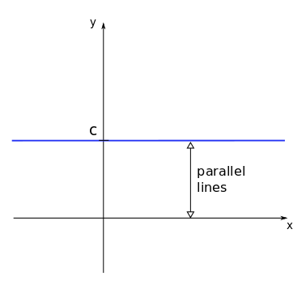
Example
For most mobile phone contracts nowadays a fixed fee is paid for the month with unlimited usage. So the cost as a function of used minutes would be a polynomial of degree zero, since the cost does not depend on the usage.
Degree 1#
Polynomial functions of degree 1 are also called linear functions and are given by:
where again \(m\) and \(b\) are real numbers (with \(m \ne 0\)).
The constants \(m\) and \(b\) are frequently referred to as slope and intercept. The intercept \(b\) shows where the function crosses the \(y\)-axis, while the slope \(m\) is related to the inclination of the function.
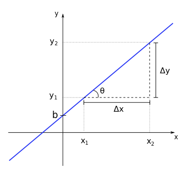
If we consider two arbitrary points, \((x_1,y_1)\) and \((x_2,y_2)\) on the line, their projections define two intervals on the \(y\) and \(x\) axes. These intervals have sizes \(\Delta y = y_2 - y_1\) and \(\Delta x = x_2 - x_1\) respectively.
The slope \(m\) will be given by the ratio between the changes in \(y\) and \(x\), for any chosen two points on the line. Thus:
Also note that the triangle defined by the sides \(\Delta y\), \(\Delta x\) and this fragment of the function line forms a right triangle. Thus, there is a relationship between the slope \(m\) and the angle \(\theta\) between the function line and the \(x\)-axis (or any horizontal line parallel to it) which is given by:
The sign of the slope \(m\) also determines if the function increases or decreases as a function of \(x\). We have:
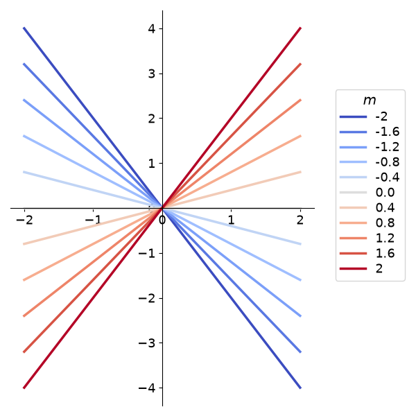
The graph on the left show the functions \(y = mx\) (intercept \(b=0\)), for different values of \(m\) (see legend colours).
Note that positive values of \(m\) give increasing functions, while negative values of \(m\) return decreasing functions.
One can also ask what is the value of \(x\) where the function \(f(x)\) crosses de \(x\)-axis, or, in mathematical notation, what is \(x\ \mbox{so that}\ f(x) = 0\). This value of x is called a root of \(f\) and it can be obtained by:
Example
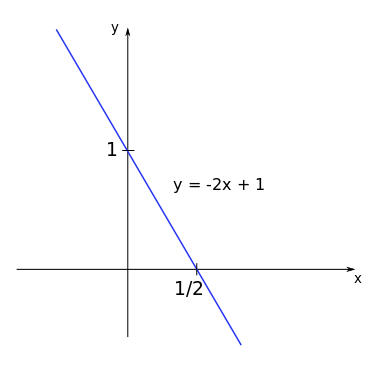
Consider the function \(y = -2x + 1\).
We have: \(m=-2\) and \(b=1\). The root of this function will be \(x = -\displaystyle\frac{b}{m} = -\displaystyle\frac{1}{(-2)} = \displaystyle\frac{1}{2}\).
Additionally, the function crosses the \(y\)-axis at the intercept \(b=1\).
Examples
The metabolic rate of some organisms depends (approximately) linearly on the body’s temperature, with higher rates at higher temperatures.
Degree 2#
Now we look at polynomial functions of degree 2, given by the general form:
the coefficients \(a\), \(b\), and \(c\) are real numbers (with \(a \ne 0\)). The graph of a polynomial function of degree 2 is a parabola and many of its properties can be readily known by analysing the coefficients.
Concavity#
Concave up (positive concavity) ^^^
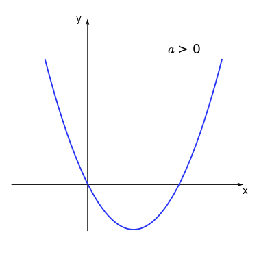
Concave down (negative concavity) ^^^
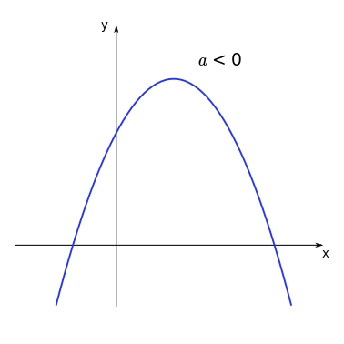
Intercept & roots#
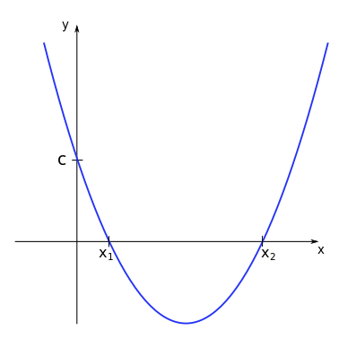
For the function \(f(x) = ax^2 +bx + c\) the coefficient \(c\) represents the intercept, the point where the function curve crosses the \(y\)-axis.
The roots of the function \(f\) are the values of \(x\) for which \(ax^2 +bx + c = 0\), where the curve crosses the \(x\)-axis. A polynomial function of degree 2 has a maximum number of two real roots*, given by:
* A polynomial function of degree \(n\) will always have \(n\) roots, but these can be imaginary or multiple roots. It therefore can (but does not have to) have a maximum of \(n\) real roots.
The expression inside the square root distinguish between different properties of this function and therefore receives the name of discriminant:
Depending on the value of the discriminant a quick conclusion can be reached regarding the roots of the function.
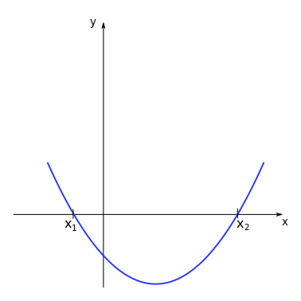
When \(\Delta > 0\) there are two real distinct roots for the polynomial function.
Examples
Consider the function \(y = 0.5 x^2 - x -1.5\). We have:
The roots will then be given by:
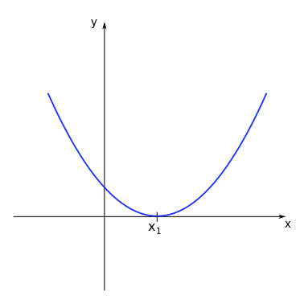
When \(\Delta = 0\) there are two real identical roots for the polynomial function.
Examples
Consider the function \(y = 0.5 x^2 - x +0.5\). We have:
The roots will then be given by:
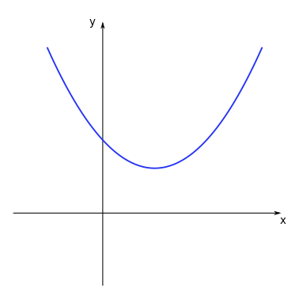
When \(\Delta < 0\) there are no real roots for the polynomial function, since the square root of a negative number is not defined for real numbers.
Examples
The graph on the left corresponds to the function \(y = 0.5 x^2 - x + 1\). We see that the curve does not cross the \(x\)-axis at any point, showing there is no real root for this function.
Example
If we throw a ball that is heavy enough so that air resistance is negligible (alternatively we can travel to the moon) the height of the ball as a function of time follows a quadratic equation. Knowing the roots we can calculate when and where the ball will land.
Minimum / Maximum#
Depending on the concavity of the parabola (up or down), there will be a point where the function assumes a minimum or a maximum value. This point is called the vertex of the parabola. This extreme point can be easily determined by the symmetry properties of the function curve.
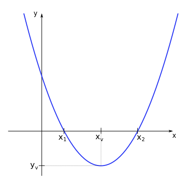
The coordinate \((x_v,y_v)\) of the vertex is given by:
Tip
Since the parabola is symmetric in relation to a vertical line passing through the vertex, the \(x\) coordinate of the vertex is given by the middle point between the two roots \(x_v = (x_1 + x_2)/2\). The \(y\) coordinate is then given by substituting \(x_v\) in the general form of the polynomial of degree 2, as \(y_v = f(x_v) = ax_v^2 + bx_v + c\). Try to obtain the expressions above as an exercise.
Tip
The extrema is the point of the parabola where the derivative becomes zero \(f'(x)=0\).
Example
Imagine the population of a specific region having a negative quadratic relationship - it undergoes initial growth, reaches its peak, and then declines. To determine both the maximum population size and the time when it peaked, we need to identify the extrema of this parabolic curve.
Rational functions#
rational functions are defined as quotients of polynomial functions:
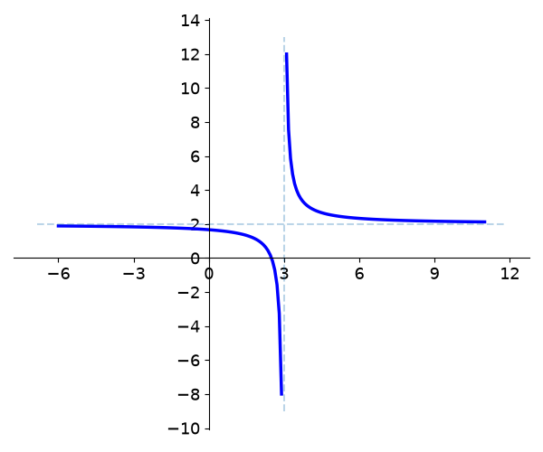
The plot on the left shows the graph for the function \(y = \displaystyle\frac{2x-5}{x-3}\).
Note that the graph approaches a vertical line at \(x=3\) when \(x\) is close to \(3\), and it approaches a horizontal line at \(y=2\) when \(x\) approaches large values (positive or negative). These lines are called vertical asymptote and horizontal asymptote, respectively.
Vertical asymptotes appear for the values of \(x\) corresponding to the roots of the denominator function (\(q(x)\)) of the rational function \(f(x)\), while horizontal asymptotes to the limits of the function \(f(x)\) (if it exists) for large \(x\)*.
Asymptotes give us a lot of information about the limiting behaviours of the function, and they are especially relevant when modelling biological phenomena.
* We will be talking more about limits on the following lectures.
Example
rational functions are often used to express ratios, for example of chemicals. Lets assume chemical A increases quadratically \(A(t) = 2 t^2\) and chemical B increases linearly \(B(t)=t+5\), the ratio will be:
Power functions#
Another type of function used in many applications are power functions (sometimes also called power laws). These functions have the functional form:
where \(C\) and \(\alpha\) are real constants (with \(C \ne 0\)).
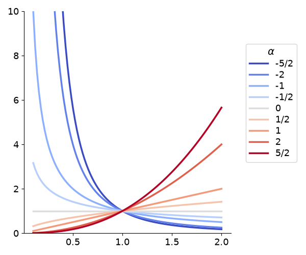
The plot on the left shows the graphs for the functions \(y = x^{\alpha}\) (with \(C=1\)) for different values of the exponent \(\alpha\) (see the legend colours).
There are a few interesting aspects to note in this plot. First, the graphs were presented only for positive values of \(x\). Some of these functions are also defined (on the set of real numbers) for negative values of \(x\) which could be presented on the plot. This is the case for \(x^{2}\) or \(x^{-2}\), but not the case for \(x^{1/2}\) or \(x^{-1/2}\).
When analysing positive values of \(x\) (as it is frequently the case for models in Biology), for \(C > 0\), the exponent \(\alpha\) determines the behaviour of the functions, with increasing functions of x for \(\alpha > 0\) and decreasing functions of x for \(\alpha < 0\).
Many commonly used functions are examples of power functions, e.g. the square root \(\sqrt{x}=x^{\frac 12}\) or the inverse function \(x^{-1}\).
Exponential functions#
Similar to power functions, but with very different properties are the exponential functions:
where \(a\) is a positive constant. The parameter \(a\) is called base and the variable \(x\) is the exponent (remember that for power functions, the variable \(x\) is the base, raised to the power of the parameter \(\alpha\)).
Exponential functions are used to model many different real-world applications, from bacterial growth to radioactive decay.
Example
Suppose we start a bacterial colony with a single individual on a Petri dish. At each time step, counted as an average reproduction interval, each individual bacterium duplicates, originating two other individuals. The number of bacteria in the colony as a function of time, \(N(t)\), can be counted as:
\(t\) |
\(N(t)\) |
|---|---|
\(0\) |
\(1\ (= 2^0)\) |
\(1\) |
\(2\ (= 2^1)\) |
\(2\) |
\(4\ (= 2^2)\) |
\(3\) |
\(8\ (= 2^3)\) |
\(4\) |
\(16\ (= 2^4)\) |
\(5\) |
\(32\ (= 2^5)\) |
If no limitation (on space or resources) is imposed to the colony, the number of bacteria at each time step \(t\) can be well modelled by an exponential function of the form:
Exponential functions of the form \(f(x) = a^x\) (with \(a>0\)) can never assume negative values and their behaviour depends on the value of \(a\).
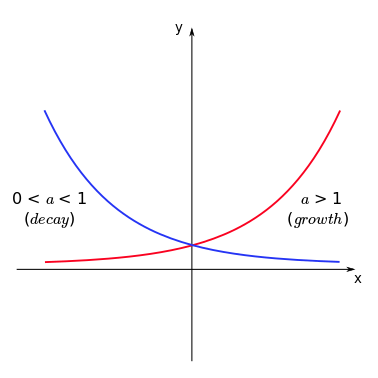
Tip
Note that the function increases with \(x\) if \(a>1\) (growth) and decreases with \(x\) if \(0<a<1\) (decay). To remember this, one can directly apply the properties of exponentiation. If \(f(x) = (1/3)^x\) (thus \(a = (1/3) < 1\)), we have:
and since \(3^x\) is an increasing function of \(x\), then \(1/3^x\) should be a decreasing function of \(x\) (as the denominator increases, the fraction decreases).
Example
In the early stages of a new desease, we can approximate the spread as exponential. In this case \(a\) is the number of people every infected person infects themselves. For \(a<1\) every person infects less than one other person on average and the desease will slow down, for \(a>1\) the desease will spread. At the beginning of the COVID-19 pandemic, an estimate for \(a\) (or in this case \(r\) for reproductive value) was \(a=4\). If we start with 1 infected person, how many do we have after 10 infection cycles?
Two of the most used bases are \(a=10\) and \(a=e\), where \(e=2.71828\) (called Euler’s number or Napier’s constant). Exponential functions with \(a=e\) are commonly written as:
The unique charachteristic of the exponential of base \(e\) is, that it is its own derivative
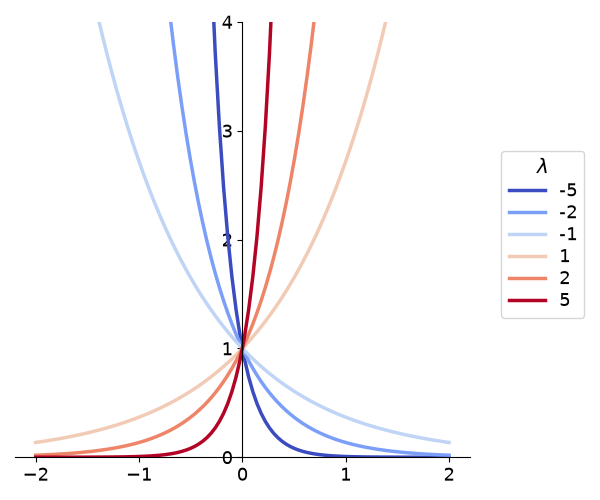
Another common representation of the exponential function is:
where \(\lambda\) is a real constant, usually called rate constant. The absolute value of the parameter \(\lambda\) controls how fast is the growth (in case \(\lambda > 0\)) or the decay (for \(\lambda < 0\)) of the function \(f(x)\) for increasing values of \(x\).
For a fixed value of \(x\), which \(\lambda\) corresponds to the highest and the lowest values among these exponential functions? Does it change if \(x\) is positive or negative? How would it change if, instead of \(a=e\), it was a different base \(a<1\)?
The both formulations can be changed into one another via
We have exponential growth when \(a>1\) and therefore when \(\lambda>0\) and decay when \(0<a<1\) and therefore \(\lambda<0\).
Logarithmic functions#
Let us start this section by understanding what the expression
actually means. One possible way to read it is: “\(\mbox{log}_a b\) is the number with which I have to exponentiate the base \(a\) so that I find the number \(b\). Since “\(\mbox{log}_a b = x\), the above expression is equivalent to:
The expression \(\mbox{log}_a b\) is called the logarithm of b in the base a and it is also possible to define a logarithmic function given by:
where \(a\) is the base of the logarithm and it is assumed \(a>0\) and \(a \ne 1\).
By defining a function like this, for each \(x\) we will have a number \(y = f(x)\) for which \(a^y = x\). Therefore, the logarithmic function is only defined for \(x>0\). Like the exponential function, the behaviour of the logarithmic function for increasing \(x\) will depend on the value of the base \(a\).
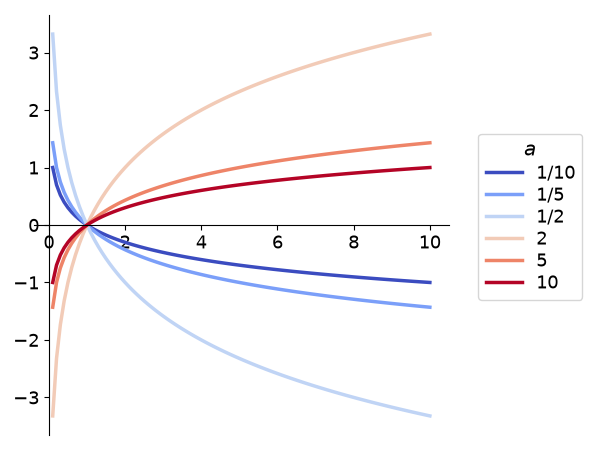
Note that the logarithmic functions are increasing if \(a>1\) and decreasing if \(0<a<1\). For a fixed value of \(x\) the functions showing the highest and lowest values \(f(x)\) will depend both on the value of the base and on which interval \(x\) belongs to (\(0<x<1\) or \(x>1\)). Can you determine these values for each case?
Tip
The similarities between the graphs for exponential and logarithmic functions are not coincidental. In fact, the graph for a logarithmic function with base \(a\) can be obtained by drawing the graph for an exponential function with base \(a\) and reflecting it in relation to the line \(y = x\). [MAKE COMMENT ON INVERSE FUNCTIONS]
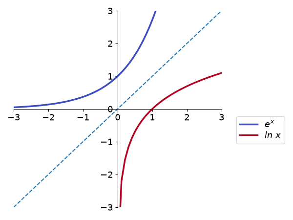
(here we use the common nomenclature \(\mbox{log}_e x = \mbox{ln}\ x\)).
Describing shapes and patterns#
Measuring angles#
An angle is a primitive geometrical element, such as the point, the curve or the plane. It is defined as the figure formed by two line segments that extend from a common point.
The two most common units for measuring angles are the degree and the radian.
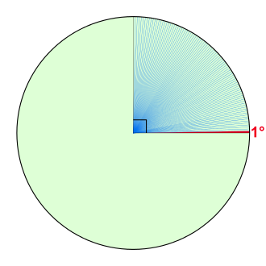
If we divide a full rotation by 360 equal parts, each of these parts is called a degree (noted as \(1^{\circ}\)). Thus, the degree corresponds to \(1/360\) of one full rotation. Each degree can also be divided in 60 equal parts called minutes (\(1^{\circ} = 60'\)) and each minute further divided in 60 seconds (\(1' = 60''\)).
In the figure, one degree (shown in red) and eighty nine degrees (shown in blue).
One radian is the angle comprised in a circunference when the size of the arc is equal to the radius of the circunference. If \(C\) is the size of the arc and \(r\) the radius of the circunference, the corresponding angle in radians \(\phi\) will be given by:
Thus, if we are considering the arc for the full circunference, \(C = 2\pi r\), and we will have:
and the angle for a full rotation corresponds to \(2\pi\) radians.
Tip
When the angle is written in radians, the unit (radians or rad) is frequently omitted.
For a given angle, transforming between units of degrees and radians can be simply done with:
where \(\theta\) is the angle measured in degrees and \(\phi\), measured in radians. In this lecture, we will consider the angles measured in radians (independent of the symbol used for the variable), unless stated otherwise.
Example
If \(\theta = 90^{\circ}\), then using the previous expression we have \(\phi = \displaystyle\frac{\pi}{2}\). Since \(\theta\) and $\phi are directly proportional, we also have:
Trigonometric circle#
We obtain the trigonometric circle by superimposing a circle of radius \(1\) to the cartesian system of coordinates:
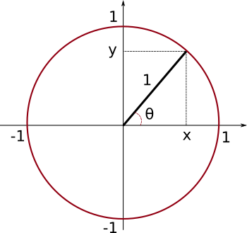
The projections on the \(x\) and \(y\)-axes have special meanings, if we consider the angle \(\theta\) between the line segment in the radial direction and the \(x\)-axis.
From the geometric relations on the right triangle (triangle in which one internal angle is a right angle):
The larger side of the triangle, opposing the right angle, is called hypothenuse, while the other two smaller side are called catheti. We define the sine and cosine of the angle \(\alpha\) as the ratios of the opposing and adjacent catheti, respectively, with the hypothenuse:
Back to the trigonometric circle, it is possible to construct a right triangle where the hypothenuse corresponds to the radius of the superimposed circle. In this case, since this radius equals to \(1\), we have:
In other words, the projections of the end of the radial line segment on the \(y\) and \(x\)-axes correspond to the sine and cosine of the angle \(\theta\). Sine and cosine for this angle can be obtained by the projections even if \(\theta > \displaystyle\frac{\pi}{2}\).
Trigonometric identities#
With the aid of the projections on the trigonometric circle, some trigonometric identities become imediately clear. Consider \(\theta > 0\) for counterclockwise angle measurements starting from the \(x\)-axis and \(\theta < 0\) for clockwise measurements. We have:
From the fact that a full rotation brings you back to the same point:
or from Pythagoras’ theorem on the right triangle in the trigonometric circle:
Tip
The notation \(\mbox{sin}^2(\theta)\) is frequently used to express the square of \(\mbox{sin}(\theta)\), or:
which is different from \(\mbox{sin}(\theta^2)\).
Trigonometric functions#
Since sine and cosine are defined for any real value of a given angle \(x\) (\(x \in {\rm I\!r}\)), we can define the functions:
Thus, the association of sine and cosine with pure geometric ratios gives place for a more generic definition of functions of real variables. The graphs of these functions are given by:
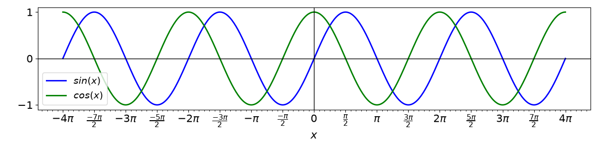
All the other known trigonometric relations can also be defined as functions in a similar way. Take for example the tangent of an angle \(\theta\), which is:
If \(x \in {\rm I\!r}\), than we can define a function
The graph from the tangent function will be given by:
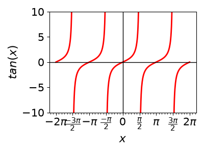
Note by the above graphs that the functions sine and cosine have patterns that repeat themselves every interval of \(2\pi\), while the tangent repeats itself every interval of \(\pi\). We say that these three functions are periodic.
A function \(f(x)\) is periodic if there is a positive constant \(a\), so that:
for all values of \(x\) for which the function f(x) is defined.
If \(a\) is the smallest number with this property, we call it the period of f(x).
Example
Since \(\mbox{sin}(x + 2\pi) = \mbox{sin}(x)\) for any value of \(x\) and since \(2\pi\) is the smallest number for which this property holds, then sine is a periodic function with period \(2\pi\). With the same reasoning, it can be shown that the tangent is periodic with period \(\pi\).
Example
Many natural processes can be modelled as periodic. Think for example of a pendulum, the tides, the seasons. Often periodicity can be a good first order approximation, even if it does not strictly hold. For example when describimg the shape of the cloud cover in the picture below.
Amplitude and Period#
From the basic functions \(\mbox{sin}(x)\) or \(\mbox{cos}(x)\) we can write a more general function \(f(x)\) given by
Since the sine ranges from \(-1\) to \(1\) (see the graph for \(sin(x)\) for reference), by its definition, \(f(x)\) will range from \(-A\) to \(A\). We call \(A\) the amplitude of \(f(x)\) and it gives the extent of the variation of the oscillation of the function.
Being sine a periodic function, \(f(x)\) will also be, possibly with a different period. The period \(T\) of \(f(x)\), as discussed before, will be determined by the equation \(f(x + T) = f(x)\), that should be valid for every \(x\). Thus:
But since we know that sine is periodic with period \(2\pi\), we should have \(|\omega|T = 2\pi\). Thus, the period of the function \(f(x)\) will be:
The constant \(\omega = \displaystyle\frac{2\pi}{T}\) is called angular frequency and measures the number of full rotations the function \(f(x)\) oscillates in one interval of \(T\).
Example
The function \(f(x) = 3.6\, \mbox{cos}\left(\displaystyle\frac{\pi}{3}x\right)\) has an amplitude \(A=3.6\), an angular frequency \(\omega = \displaystyle\frac{\pi}{3}\), and a period \(T = \displaystyle\frac{2\pi}{\omega} = \displaystyle\frac{2 \pi}{\frac{\pi}{3}} = 6\).
Modelling complex periodic phenomena#
Analysing change, one step at a time#
Imagine a colony of wasps is founded by a queen with the following pattern of eggs laid:
Days |
Eggs |
|---|---|
\(0\) |
\(100\) |
\(1\) |
\(135\) |
\(2\) |
\(170\) |
\(3\) |
\(205\) |
\(4\) |
\(240\) |
Since there is an additive pattern for the increase in the total number of eggs laid, with the number of eggs in any given day, we can determine the number of eggs the colony will have in the following day. If we index the days by a sequence of natural numbers n, we have for the above colony:
where \(a_n\) represents the total amount of eggs in a given day \(n\) and \(a_{n+1}\) the same variable on the day following day \(n\). The constant \(35\) represents the daily increment (or decrement) on this total number. A sequence of number built with constant additive increments receives the name of arithmetic progression.
The above expression defines an iterative process (also known as a recursion) with which we can construct the whole sequence starting from a single initial value. If we want to know how many eggs will have been laid on a given day \(n\), this shall be given by the expression:
Thus, the total amount of eggs laid on day \(n=100\) is \(a_{100} = 100 + 35 \cdot 100 = 3600\).
Now imagine a single *Escherichia coli* cell put on a Petri dish with a favorable growth medium. If given the right conditions, *E. coli* cells divide, generating two other cells, in a time of approximately $30$ minutes. For our experiment, we would have:
Minutes |
# cells |
|---|---|
\(0\) |
\(1\) |
\(30\) |
\(2\) |
\(60\) |
\(4\) |
\(90\) |
\(8\) |
\(120\) |
\(16\) |
If \(t\) represents the number of reproduction intervals since the start of the experiment (assuming values \(t=0, 1, 2, \ldots\)), then we can construct the recursion:
where \(N_t\) represents the number of E. coli cells after \(t\) intervals of reproduction (each interval corresponding to \(30\) minutes) and \(N_{t+1}\) represents the number of cells on the interval following \(t\). See that this time the constant \(2\) provides a multiplicative increment, so that the sequence formed by this multiplicative iteration is called geometric progression.
If we want \(N_t\) for a given interval \(t\), we then have:
leading to an exponential growth in discrete steps.
In general, if we have a population growth described by a geometric progression, starting with a number of individuals \(N_0\), the number of individuals on the subsequent generations can be described by the recursion:
where \(t\) indicates the number of generations and \(r\) is a positive constant (\(r>0\)).
With this recursion, starting from \(N_0\), we can obtain the full sequence by construction:
From this process of construction, we can obtain what we call the solution of the above recursion, given by:
In problems of population dynamics, \(r\) is called growth constant and its value determines the long-term behaviour of the function:
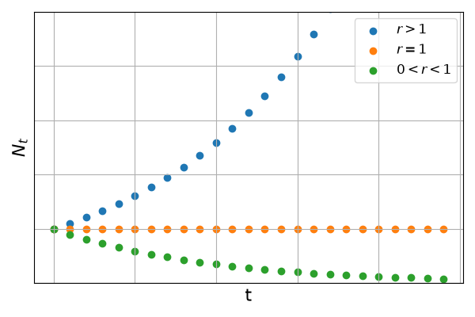
Sequences#
The two last problems are examples of sequences for which a formal definition is given as:
in other words, a sequence is a function \(f\) from the set of natural numbers to the set of real numbers. For each value of the independent variable \(n\) (a natural number), the sequence determines its image \(f(n)\).
Example
The sequence defined by the rule \(f(n) = \displaystyle\frac{1}{n+1}\) defines the sequence of numbers (starting from \(n=0\)):
corresponding to the set of values \(n=0,1,2,3,4,\ldots\).
Sequences are usually written as ordered lists of numbers \(a_0, a_1, a_2, a_3, \ldots\) where \(a_n=f(n)\) and referred to with the notation \(\{a_n\}\) (which is short for \(\{a_n: n \in {\rm I\!N}\}\), making it explicit that \(n\) is a natural number).
As we have seen before, two forms of representation are possible:
Explicit description ^^^ $\(a_n=f(n)\)$
Examples
In this case, any term \(a_n\) of arbitrary index \(n\) can be obtained by direct calculation if we know the function \(f(n)\).
recursive description ^^^ $\(a_{n+1}=g(a_n)\)$
Examples
The recursive description is also called difference equation. Note that with the form \(a_{n+1}=g(a_n)\) the following term \(a_{n+1}\) can be determined only with the term one step back \(a_n\), knowing the function \(g\). In general, recursions can be dependent on several other backward terms. When it depends only on the immediate previous term it is called a first-order recursion.
Limits#
In many applications, we are interested to know what is the long-term behaviour of a given sequence \(\{a_n\}\). For example, is a given population tending towards a stable number of individuals as time passes? In other words, we want to know if there is a number \(L\) for which the sequence tends to as \(n\) increases. To represent this we use the following notation:
If such a number exists, we say that the sequence \(\{a_n\}\) is convergent.
Examples
\(a_n = \displaystyle\frac{1}{n+1}: \ \ \ \left\{1,\displaystyle\frac{1}{2},\displaystyle\frac{1}{3},\displaystyle\frac{1}{4},\displaystyle\frac{1}{5},\ldots\right\}\)
Note that each term is smaller than the previous and they are all positive. We can conclude that:\[\lim a_n = 0.\]\(b_n = (-1)^n: \ \ \ \left\{1,-1,1,-1,1,-1,\ldots\right\}\)
The terms in this sequence are alternating between \(1\) and \(-1\), never convergeing for a specific value. Thus, the limit of sequence \(\{b_n\}\) does not exist.
\(c_n = 2^n: \ \ \ \left\{1,2,4,8,16,32,\ldots\right\}\)
For this sequence, the terms are ever increasing. We frequently say that the sequence tends to infinity (or tends to \(\infty\)). However, \(\infty\) represents an abstraction (“ever increasing”), not a specific number. Therefore, the limit for this sequence also does not exist.
\(d_n = \displaystyle\frac{n+2}{n+1}: \ \ \ \left\{2,\displaystyle\frac{3}{2},\displaystyle\frac{4}{3},\displaystyle\frac{5}{4},\displaystyle\frac{6}{5},\ldots\right\}\)
For this sequence, each term is smaller than the previous (look at the decimal forms of the fractions: \(2, 1.5, 1.333\cdots, 1.25, 1.2 \ldots\)) and they are greater than \(1\). We can conclude that:\[\lim a_n = 1.\]
Although there is a formal way to prove that a sequence \(\{a_n\}\) converges to a certain limit, in practice we use a set of rules to apply limits to sequences and composition of sequences.
Tip
Consider two sequences \(\{a_n\}\) and \(\{b_n\}\), and \(C\) as a real constant. If these two sequences are convergent with \(\lim a_n = L\) and \(\lim b_n = M\), we have:
In other other words, if you can decompose a given sequence into the sum, product or division of two other convergent sequences, the limit of this sequence will be the composition of the limits of the two others.
Examples
If \(a_n = \displaystyle\frac{4n^2-1}{n^2}:\)
since as we know: \(\ \lim 4 = 4\ \) and \(\ \lim \displaystyle\frac{1}{n} = 0\).
For recursions, one way to find the limit is to find the solution (corresponding explicit description) and then calculate the limit of the sequence with the limit rules. However, finding the explicit form of a given sequence is not always possible.
There is a procedure to find candidates for the long-term behaviour of a given sequence. We do this by calculating fixed points.
Fixed points are specific values on a given sequence for which all subsequent values equal the first. That is, if \(a\) is a fixed point of the sequence \(\{a_n\}\), and if \(a_0 = a\), then \(a_1 = a\), \(a_2 = a\), and all the other values will be \(a\). Thus, given the recursion \(a_{n+1} = g(a_n)\), if \(a\) is a fixed point we will have:
and the last equation provides a way of find possible values of \(a\).
Example
Consider the following recursion
To obtain the fixed points we calculate:
Starting with \(a_0 = 2\), we can use the recursion to construct the sequence as:
or also: \(\{2.449\cdots,2.711\cdots,2.852\cdots,2.925\cdots, \ldots\}\). We see that starting with \(a_0=2\), we have \(a_n>2\) for all \(n\), with increasing values. Since \(a=3\) is a fixed point, we conclude that \(\lim a_n = 3\).
Example
Whenever we are asking questions like ‘where does this process stabilise’ or ‘how high/much will it be in the end,’ we are interested in the limit of some series. This could be a variety of things, like population size, ground water levels, global mean temperature, number of trees, etc.
Warning
remember that fixed points are only candidates for long-term behaviour. See for example the recursion:
For the fixed points, we calculate:
Indeed, if we construct the sequence from the recursion starting with any of these two values, all the subsequent elements of the sequence will have the same value. However:
or
showing that for any initial value chosen (different from the fixed points), the sequence will oscillate between two values, without a clear tendency to any limit.
Discrete-time population models#
Sequences are generally used in many applications in Biology. Important examples are models for seasonally breeding populations.
Density-dependent population growth#
As we have seen before, the recursion relation for the exponential growth model is given by \(N_{t+1} = rN_t\). rearranging the terms of this equation we have:
The left-hand term of the last equation is known as parent-offspring ratio as it denotes the ratio between the population size at time \(t\) (parents) and the population size at the following time \(t+1\) (offspring). Here we are considering a population that breeds without overlapping generations. Each generation breeds, dies, and is replaced by their offspring on the following generation.
On the equation we also see that the parent-offspring ratio is equal to \(\displaystyle\frac{1}{r}\), which is a constant. Therefore, we say that this growth is density-independent as the parent-offspring ratio does not depend on the density of individuals at any time step. relating the parent-offspring ratio to the value of \(r\) allows us to predict the behaviour of this population in terms of growth or decline:
We know, however, than in real scenarios, that the growth factor of a given population should depend on the current size of that population, due to space or resources limitation. These are called density-dependent effects. One of the simplest methods to include density-dependent effects in this population model is to consider the parent-offspring ratio as a linear function of \(N_t\), instead of a constant. Let us assume that the parent-offspring ratio show the following linear behaviour:
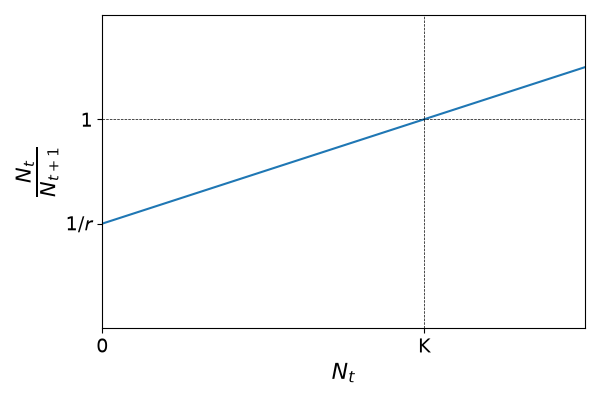
This means that the parent-offspring ratio is smaller than \(1\) (population growth) for values of \(N_t\) smaller than a given population threshold \(K\), and greater than \(1\) (population decline) if the population size is greater than this threshold. The graph above leads to the following expression:
which leads, after rearranging the terms, to:
The previous expression is known as Beverton-Holt recruitment curve (or Beverton-Holt model) and it describes a type of population growth called logistic growth.
The fixed points \(\bar{N}\) for this recursion can be calculated as:
From the last term we can show (try it as an exercise) that \(\bar{N}=0\) and \(\bar{N}=K\) are the two fixed points. Starting from different values for the initial population size \(N_0\) it can be shown that the population tends to \(K\) as time increases as:
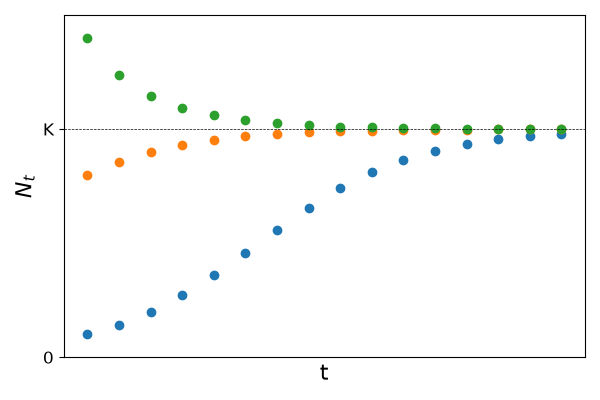
The constant \(K\) is know as carrying capacity and represents the maximum population size a given population can reach at a given place, due to intra-specific competition for resources or space.
Annual plants#
Suppose a given population of plants produces, on average \(f\) seeds per individual in the reproductive period. Seeds survive winter with a probability \(\sigma\) and germinate on the next season with probability \(\alpha\) (these seeds reach reproductive maturity on the same season). If \(p_n\) is the plant population size on season \(n\) and \(p_{n+1}\) the population size on the season following \(n\), we shall have:
which correspond to the density-independent model since \(r=\alpha\sigma f\) is a constant.
Now suppose that some of the seeds that were produced on the previous season and survived the previous winter, but did not germinate on the current season, might have a second chance of germinating. They might do so on the following season, provided they survive the winter and germinate on the following season. From the average number of seeds produced last season \(fp_{n-1}\), a number \(\sigma fp_{n-1}\) of them survived last winter. From this number, a fraction \((1-\alpha)\) did not germinate this season (1 minus the probability of germinating). These seeds will have a second chance provided they survive next winter (with probability \(\sigma\)) and germinate on the next season (with probability \(\alpha\)). Thus, the number plant population size on the season following \(n\) will be:
where \(\beta=\alpha\sigma f\) and \(\gamma = \alpha(1-\alpha)\sigma^2 f\).
The previous model is an example of a discrete population model with overlapping populations. Since the term \(n+1\) depends not only on the term \(n\) but also on \(n-1\) this is called a second-order difference equation or delay (or lagged) difference equation.
Fibonacci sequence#
The Fibonacci sequence is a sequence defined by the following rule: each number is equal to the sum of the previous two numbers (starting with \(0\) and \(1\)). Thus the following sequence might be formed:
It can also be defined by the second-order difference equation:
Although this is clearly not a convergent sequence (with sustained growth for each element), if we define a new sequence given by the ratio between successive elements of the Fibonacci sequence as \(b_n = \displaystyle\frac{F_{n+1}}{F_n}\), it can be show that this sequence is convergent.
Assuming that \(\lim \displaystyle\frac{F_{n+1}}{F_n} = \lambda\), we have:
The previous equation is solved finding the roots of the second-degree polynomial, which gives \(\lambda = \displaystyle\frac{1+\sqrt{5}}{2}\) or \(\lambda = \displaystyle\frac{1-\sqrt{5}}{2}\). Since the solution \(\displaystyle\frac{1-\sqrt{5}}{2}\) is negative, it can be the limit of the ratio of Fibonacci terms (all of them positive). Hence we conclude:
The previous number is known as the Golden ratio and it has fascinated mathematicians, phylosophers, and artists since ancient times. Fibonacci numbers and the Golden ratio can be found in several interesting natural patterns, as you can see in this video.
From table arrangements to powerful tools#
Vectors and Matrices#
Before solving systems of linear equations, it is essential to understand two important mathematical objects: vectors and matrices.
Vectors
A vector is an ordered collection of numbers, called components, which can be visualized as an arrow in space. For example, a vector in two dimensions can be written as:
where \(v_1\) and \(v_2\) are the components of the vector. Similarly, a vector in three dimensions has three components:
Vectors are often used to represent quantities like position, velocity, or forces in physical problems.
Matrices
A matrix is a rectangular array of numbers arranged in rows and columns. For example:
where \(a_{11}, a_{12}, a_{21},\) and \(a_{22}\) are the elements of the matrix \(A\).
Matrices can represent systems of linear equations, transformations, or other structured data. A common operation involving matrices is multiplying them with vectors. For example, multiplying matrix \(A\) by a vector \(\mathbf{x}\):
This operation is fundamental in solving linear systems.
Systems of linear equations#
As we saw previously, the equation \(ax + by = c\), with \(a\), \(b\), and \(c\) constants, defines a straight line on the \(xy\)-plane (note that it can also be written as \(y = mx + k\), \(m\) and \(k\) constants, by a suitable change of the coeffients). Since the coefficients do not depend on the variables \(x\) and \(y\), we call it a linear equation. A possible plot for this equation would be:
Note that all the points \((x,y)\) on the blue line satisfy or solve the lienar equation \(ax + by = c\).
Now consider that we have the following:
where \(a, b, c, d, e,\ \mbox{and}\ f\) are all constants.In this case we have a system of linear equations. Solving this system means to find all possible pairs \((x,y)\) that solve both equations simultaneously. For the previous system, we would have 3 options:
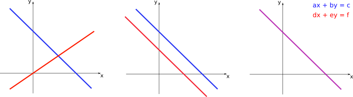
On the left panel, the two lines intersect at a single point. This point is the only one that solves both linear equations at the same time, and, therefore, constitutes the only solution for the system of two equations. On the central panel, the two lines are parallel, so there is no point of intersection. In this case there is no solution and the system of equations is said to be inconsistent. On the right panel, the two lines coincide. Thus, every point in those lines correspond to a possible solution for the system, so that it has infinite solutions.
Example
Given the system of linear equations
we can obtain the solution by isolating one of the variables in one of the equations and substituting on the other equation. Isolating \(x\) on the first equation gives:
Then by substituting on the second we have:
The value of \(x\) shall then be given by:
We see that the system has a single solution, given by \(\left(\displaystyle\frac{3}{2},1\right)\).
Example
Now consider the sytem
Isolating \(x\) on the first equation gives the same as before:
Then by substituting on the second we have:
which is just a trivial equation.
When we look at the equations in our system we see that the second equation is simply a constant multiplied by the first \((\text{Eqn.} 2) = -2\cdot(\text{Eqn.} 1)\), and thus they should represent the same straight line.
This system has then infinite solutions which are represented by the set of points \(\left(3 - \displaystyle\frac{3}{2}y,y\right)\)
Tip
Note that writing the solution as \(\left(3 - \displaystyle\frac{3}{2}y,y\right)\) represents an infinite set of points, since for every real value of \(y\) we would have a different ordered pair. This set of points forms the straight line corresponding to \(2x+3y = 6\).
Solving the system by this method of substitutions, however, can get much more complicated if we have more than two variables. For these cases, we need a simpler method.
One strategy is to find equivalent systems, which have the same solution as the original one, but are much easier to solve. We can apply the following set of operations without changing the solutions of a given system:
Multiplication of an entire row by a non-zero constant
Adding/subtracting one row to another
rearranging the order of the rows
The examples below show this procedure applied to two systems.
Examples
(i) \(\begin{cases} 3x + 5y - z = 10 \\ 2x – y + 3z = 9 \\ 4x + 2y - 3z = -1 \end{cases}\)
(ii) \(\begin{cases} x - 3y + z = 4 \\ x – 2y + 3z = 6 \\ 2x - 6y + 2z = 8 \end{cases}\)
Note that by applying the rules of matrix multiplication, the system (ii) can also be written in the form:
where \(A\) is the matrix of coefficients and \(\mathbf{x}\) is the vector of variables.
Tip
We will be using the common notation of uppercase letters (\(A\)) to represent matrices and lowercase bold letters (\(\mathbf{x}\)) to represent vectors.
In general, the system with \(n\) variables \(\{x_1, x_2, \ldots, x_n \}\) and \(m\) equations can be written as
can be written as \(A\mathbf{x}=\mathbf{b}\), where
and
The matrix \(A\) has size \(m \times n\) (since the number of equations can, in principle, be different from the number of variables), while the vectors \(\mathbf{x}\) and \(\mathbf{b}\) have sizes \(n \times 1\) and \(m \times 1\), respectively.
Matrix operations#
Let us quickly remind the basic operations that can be performed with matrices. If \(A\) and \(B\) are both matrices of size \(m \times n\) (\(m\) rows and \(n\) columns), we have:
\(A=B\ \) if and only if \(a_{ij} = b_{ij}\) for every \(1 \le i \le m, 1 \le j \le n\) (elements at the same position have to be equal).
\(C = A + B\) is the matrix for which \(c_{ij} = a_{ij} + b_{ij}\) (sum is performed summing the elements at the same position)
If \(k \in \rm I\!r\) than \(kA\) is the \(m \times n\) matrix with elements \(ka_{ij}\)
The following properties are valid:
\[\begin{split}\begin{align} A+B &= B+A \\ (A+B)+C &= A+(B+C) \\ A + 0 &= A\ (0\ \mbox{here represents the matrix with null elements}) \end{align}\end{split}\]Example
If \(A=\begin{pmatrix} 1 & 0 \\ -1 & 2 \end{pmatrix}\) and \(B=\begin{pmatrix} 2 & 3 \\ -1 & 1 \end{pmatrix}\), then:
\[\begin{split}C = 2A+B = \begin{pmatrix} 2 & 0 \\ -2 & 4 \end{pmatrix} + \begin{pmatrix} 2 & 3 \\ -1 & 1 \end{pmatrix} = \begin{pmatrix} 4 & 3 \\ -3 & 5 \end{pmatrix}\end{split}\]If \(A\) is the \(m \times n\) matrix with elements \(a_{ij}\), the transpose of \(A\) (denoted by \(A'\)) is the \(n \times m\) matrix with elements \(a_{ij}' = a_{ji}\).
Example
\[\begin{split}A=\begin{pmatrix} 1 & 2 & 3 \\ 4 & 5 & 6 \end{pmatrix} \longrightarrow A'=\begin{pmatrix} 1 & 4 \\ 2 & 5 \\ 3 & 6 \end{pmatrix}\end{split}\]\[\begin{split}B=\begin{pmatrix} 1 & 2 \end{pmatrix} \longrightarrow B' = \begin{pmatrix} 1 \\ 2 \end{pmatrix}\end{split}\](Matrix multiplication) Consider now that \(A\) and \(B\) are matrices with sizes \(m \times l\) and \(l \times n\) (number of columns of \(A\) is equal to the number of rows of \(B\)). Then we can define \(C = AB\) as the \(m \times n\) matrix with elements \(c_{ij}\) formed by multiplying every element of the \(i\)-th row of \(A\) with the corresponding element of the \(j\)-th column of \(B\).
Example
If \(A=\begin{pmatrix} 1 & 2 \\ -1 & 0 \end{pmatrix}\) and \(B=\begin{pmatrix} 1 & 2 & 3 \\ 0 & -1 & 4 \end{pmatrix}\), then:
\[\begin{split}C = AB = \begin{pmatrix} 1 & 0 & 11 \\ -1 & -2 & -3 \end{pmatrix}.\end{split}\]Note that the matrix \(BA\) cannot be defined here since the number of columns of \(B\) is different from the number of rows of \(A\).
Warning
If matrices \(A\) and \(B\) are square matrices (same number of rows and columns) then we can define both \(AB\) and \(BA\). But, in general, we cannot assume that \(AB=BA\). For example, if \(A=\begin{pmatrix} 2 & -1 \\ 4 & -2 \end{pmatrix}\) and \(B=\begin{pmatrix} 1 & -1 \\ 2 & -2 \end{pmatrix}\), then:
\[\begin{split}AB = \begin{pmatrix} 0 & 0 \\ 0 & 0 \end{pmatrix} \quad and \quad BA = \begin{pmatrix} -2 & 1 \\ -4 & 2 \end{pmatrix}\end{split}\]For matrix multiplication, the following properties are valid:
\[\begin{split}\begin{align} (A+B)C&=AC+BC \\ A(B+C)&=AB+AC \\ (AB)C &= A(BC) \\ A0 &= 0A = 0 \end{align}\end{split}\]We can also define powers of \(A\). If \(k\) is a positive integer:
\[A^k = A^{k-1}A = AA^{k-1} = A\cdot A\cdot A \cdots A\ (\mbox{product of}\ k\ \mbox{matrices})\]
Inverse matrix#
Suppose that \(A\) is a \(n \times n\) matrix. If there exists a \(n \times n\) matrix \(B\) so that
where \(I=\begin{pmatrix} 1 & 0 & \cdots & 0 \\ 0 & 1 & \cdots & 0 \\ \vdots & & \ddots & \vdots \\ 0 & 0 & \cdots & 1 \end{pmatrix}\) is the \(n \times n\) identity matrix (with elements \(1\) on the main diagonal and \(0\) otherwise).
In this case we call the matrix \(B\) the inverse of \(A\) and denote \(B=A^{-1}\). If \(A\) has an inverse than it is called invertible or non-singular. If it does not have an inverse, \(A\) is singular.
Finding the inverse of \(A\) automatically gives us the solution to the system of linear equations \(A\mathbf x = \mathbf x\)
Finding ways of inverting matrices is therefore needed for a wide range of applications. A whole research field is dealing with optimising matrix inversions.
Example
To find the inverse of matrix \(A= \begin{pmatrix} 2 & 5 \\ 1 & 3 \end{pmatrix}\), we have to find the matrix \(B = \begin{pmatrix} b_{11} & b_{12} \\ b_{21} & b_{22} \end{pmatrix}\) so that
Thus
which leads to two systems of equations:
The solutions of these two systems, leads to \(B= \begin{pmatrix} 3 & -5 \\ -1 & 2 \end{pmatrix}\)
Determinant#
If \(A = \begin{pmatrix} a_{11} & a_{12} \\ a_{21} & a_{22} \end{pmatrix}\) then the expression:
given by the product of the elements on the main diagonal minus the product of the elements on secondary diagonal. The term \(\mbox{det}A\) is called the determinant of \(A\). The determinant can be calculated for matrices of any size, but the expression gets increasingly more complicated for larger matrices.
The determinant establishes a clear criterium for the existence of \(A^{-1}\). The matrix \(A\) will be invertible if and only if \(\mbox{det}A \ne 0\).
Note
The previous criterium has an important implication. Consider the system of linear equations defined by \(A\mathbf{x}=\mathbf{b}\) with equal number of equations and variables. If \(\mbox{det}A \ne 0\) then the inverse of \(A\) exists. Thus, if we multiply \(A^{-1}\) to the left of each side of the equation defining the linear system, we have:
which means that if \(\mbox{det}A \ne 0\) the system will have a single solution with the variables assuming the values \(\mathbf{x} = A^{-1}\mathbf{b}\).
Structured models#
In the models we have seen until now, all the individuals in a given population are identical. However, real populations have importance differences between individuals according to their life stages. For example, some insects have stages of eggs, larvae, pupae, and adults, while many plants pass through stages of seeds, seedlings, saplings, and mature individuals. Thus, understanding the differences in the dynamics of each life stage is important to add realism to our models (especially in applied models, such as pest control or harvesting management).
Suppose our population is composed by two classes: immature and mature individuals. Let us assume non-overlapping breeding seasons and that the timescales for reproduction and maturation are similar. Thus, time can be counted in discrete steps corresponding to this reproduction/maturation interval. At time \(t\) we have \(X_t\) immature individuals and \(Y_t\) mature individuals. Immature individuals survive until maturity with a probability \(p\), while mature individuals reproduce and generate, on average, \(m\) immature individuals for the next generation. Mature individuals die after reproduction. With these assumptions, we can calculate the sizes of each population class on the step \(t+1\) as:
See that now we have a model with two equations describing the variable class sizes in our population. Moreover, the dynamics of each class depends on the other, so that we have a system of coupled difference equations.
Interestingly, we can also write this system in matrix form, as:
where the sum of the components of the population vector \(\mathbf{n_{t}}\), gives the total population (immature plus mature individuals) at time \(t\): \(N_t = X_t + Y_t\). The matrix \(P=\begin{pmatrix} 0 & m \\ p & 0 \end{pmatrix}\) is called projection matrix or Leslie matrix. Multiplying matrix \(P\) by the population vector at time \(t\), \(\mathbf{n_{t}}\), we can project the next population size at time \(t+1\). Thus, from an initial population state, say \(\mathbf{n_{0}}\), the projection matrix governs the dynamics of the model.
This model can be easily generalised for a larger number of age classes. Suppose we now have \(q+1\) classes, \(X_0, X_1, X_2, \ldots, X_q\), from the youngest (meaningful) age \(X_0\) until the oldest age \(X_q\). At each time step \(t\), individuals from class \(X_i\) have a chance of surviving to the next age class \(X_{i+1}\), with probability \(p_{i+1\ i}\) (imagine an arrow for direction of age class progession \(p_{i+1\leftarrow i}\). We are going to omit the arrow for simplicity). Additionally, suppose that each age class \(X_i\) excluding the youngest, will, in principle, be able to reproduce, with average fecundity \(m_i\) generating new individuals for class \(X_0\). Thus, with the age class sizes at time \(t\), and the parameters for survival probabilities and average fecundities, we have:
This can also be written in matrix form as:
The generalised projection matrix \(P\) has then all the surviving probabilities just below the main diagonal, and the fecundities for each class in its \(0\)-th row.
Note
Two important differences here. First, the rows and columns for the matrix are indexed starting from \(0\) until \(q\), not starting from \(1\) as usual. Second, the time steps are written in parentheses for each age class, instead of a subscript as we have seen before for other population models, so that it does not conflict with the index for the age classes (going from \(0\) to \(q\)).
Example
Consider a population with three age classes \(X_0, X_1,\mbox{ and}\ X_2\), and the following projection matrix
If the population starts with \(10\) individuals in the oldest category at time \(t=0\), the population vector at time \(t=1\) will be:
The population age distribution at each time step will then be given be the successive application of the matrix \(P\) to the previous population distribution. For the first 10 time steps we have:
Two important things are worth noting here. First, the total population size (sum accros all age classes), follows the sequence \(N_t = \left\{ 10,100,50,260,225,700,822,1975,2756,5759,\ldots \right \}\). The reproduction process does not always lead to increasing population sizes in the beginning, but is subject to size fluctuations due to the demographic distribution of this population. After a few steps increases in population size become more consistent. Second, as the population size continues to increase, the population age distribution tends to a given proportion of the population classes given by: \(X_0 \approx 76\%, X_1 \approx 22\%, \mbox{and}\ X_2 \approx 2\%\).
Now consider that, instead of \(10\) individuals in the oldest class, we initiate the population with the following distribution \(\mathbf{n_{0}} = \begin{pmatrix} 7.6 \\ 2.2 \\ 0.2 \end{pmatrix}\). The population progression by successive application of the projection matrix will be
You can check that although each age cathegory is increasing, the percentage contribution of each class to the total population remains nearly constant. To this distribution of classes we give the name of stable age distribution.
Moreover, at each time step, each age class increases with approximately the same factor in relation to the previous step, around \(\lambda = 1.75\). If for each age class \(X_i(t+1) = \lambda X_i(t)\) is valid,then we have:
so that we recover the usual model for exponential growth for the total population size \(N_{t+1} = \lambda N_t\).
Linear transformations#
In general terms, a given matrix \(A\) is a representation of what we call a linear transformation, a function from a special kind of set called vector space into another vector space. Vector spaces are generalised sets with particular properties, but for the moment you can think of two-dimensional and three-dimensional cartesian spaces as usual vector spaces. Then vectors are gonna be represented as arrays of real numbers as before: \(\mathbf{n_{0}} = \begin{pmatrix} 7.6 \\ 2.2 \end{pmatrix}\) or \(\mathbf{v} = \begin{pmatrix} x \\ y \\ z \end{pmatrix}\).
Back to linear transformations, they are usually denoted as:
where \(V\) and \(W\) are the domain and codomain vector spaces, and the transformation \(A\) is a function that projects vectors \(\mathbf{v}\) into the images \(A(\mathbf{v})\). The property that defines linear transformations is the following:
where \(a\) and \(b\) are constants. In other words,for a linear transformation, the image of the transformation \(A\) of a linear combination of two vectors (\(\mathbf{v}\) and \(\mathbf{w}\)) is equal to the linear combination of the images of this vectors by \(A\).
If we represent vectors with their components in a cartesian system, the images of the transformation \(A\) will be given be the multiplication of the matrix representation of \(A\) on the vectors.
Example
Given the matrix \(A = \begin{pmatrix} 1 & 2 \\ 3 & 2 \end{pmatrix}\) and the vectors \(\mathbf{v_1} = \begin{pmatrix} 3 \\ -1 \end{pmatrix}\) and \(\mathbf{v_2} = \begin{pmatrix} 2 \\ 3 \end{pmatrix}\), then we have:
The vectors and their respective transformations are given by:
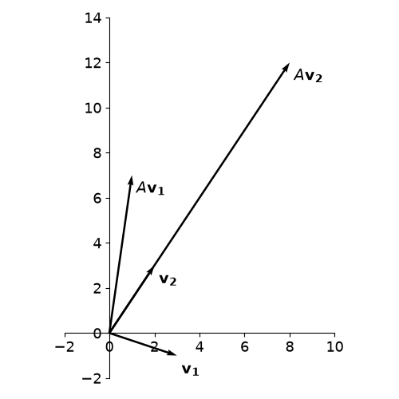
We see that under the transformation \(A\), vector \(\mathbf{v_1}\) gets rotated (counterclockwise) and stretched, while vector \(\mathbf{v_2}\) only gets stretched without changing the direction.
Eigenvalues and eigenvectors#
As seen on the previous example, there might be some vectors that upon application of \(A\) do not have their direction changed, only their magnitude (or module of the vector). For these vectors, we have, in general:
But this is equivalent to:
where \(I\) is the identity matrix. The equation \(\left(A - \lambda I \right)\mathbf{v} = 0\) defines a system of linear equations where \(A - \lambda I\) is the coefficient matrix, \(\mathbf{v}\) is the vector of variables, and \(\mathbf{b}=0\). See that since \(\mathbf{b}=0\) we already know one possible solution for this system, which is \(\mathbf{v}=0\) (all the variables equal to \(0\)). Therefore, either this system has an unique solution (the null solution) or it has infinite solutions, but definitely it is not inconsistent. Thus, if we want to know all possible non-zero vectors \(\mathbf{v}\) that satisfy \(A\mathbf{v} = \lambda\mathbf{v}\), we have to impose that the system assumes infinite solutions. This criterium should be defined by the determinant of the matrix of coefficients, as:
The determinant then defines a polynomial in the variable \(\lambda\), \(\mbox{det}(A-\lambda I)=p(\lambda)\), called characteristic polynomial. Since we are interested in the condition \(p(\lambda)=0\), what we want to know are the roots \(\lambda\) of this polynomial.
The solutions \(\lambda\) for these equations are called eigenvalues and their corresponding vectors are eigenvectors. In summary, the eigenvectors are all the vectors that, upon application of \(A\), remain on the same direction, only changing magnitude, with the eigenvalue being the stretching/compressing factor.
Example
Let us calculate the eigenvalues and eigenvectors of \(A = \begin{pmatrix} 1 & 2 \\ 3 & 2 \end{pmatrix}\). First we need to obtain matrix \((A-\lambda I)\) and to calculate its determinant. We have:
The characteristic polynomial will be given by \(p(\lambda)=\mbox{det}(A-\lambda I)\), and applying the rule for the calculus of determinants of matrices size 2, we have:
Thus, calculating the roots of this 2nd-degree polynomial, we find \(\lambda_1=-1\) and \(\lambda_2=4\). For each of the eigenvalues, to obtain the eigenvectors we have to solve the linear system \(A\mathbf{v} = \lambda\mathbf{v}\) for some general vector \(\mathbf{v} = \begin{pmatrix} x \\ y \end{pmatrix}\) (with coordinates \(x\) and \(y\) to be specified). Thus:
\(\mathbf{\lambda_1 = -1}\):
\(\begin{align} A\mathbf{v} = \lambda\mathbf{v} \longrightarrow \begin{pmatrix} 1 & 2 \\ 3 & 2 \end{pmatrix}\begin{pmatrix} x \\ y \end{pmatrix}= -1\begin{pmatrix} x \\ y \end{pmatrix}\longrightarrow \cases{x + 2y = -x \\ 3x + 2y = -y} \longrightarrow \cases{2x + 2y = 0 \\ 3x + 3y = 0} \end{align}\)
Note that both equations correspond to the same linear equation \(x + y = 0\), which is exactly what we would expect since we built the system to be underdetermined when we did \(\mbox{det}(A-\lambda I) = 0\). The eigenvector corresponding to \(\lambda_1\) will be such that \(x + y = 0\) or \(x = -y\). Thus, we can choose \(\mathbf{v_1} = \begin{pmatrix} 1 \\ -1 \end{pmatrix}\).
Note
remember that infinite solutions are possible for the same system. The important is that the condition \(x = -y\) holds. In fact, multiplying a non-zero constant for the vector \(\begin{pmatrix} 1 \\ -1 \end{pmatrix}\) would still give a vector in the same direction. So if \(\mathbf{v_1}\) is an eigenvector, \(k\mathbf{v_1}\ (k \in {\rm I\!r})\) also is.
\(\mathbf{\lambda_1 = 4}\):
\(\begin{align} A\mathbf{v} = \lambda\mathbf{v} \longrightarrow \begin{pmatrix} 1 & 2 \\ 3 & 2 \end{pmatrix}\begin{pmatrix} x \\ y \end{pmatrix}= 4\begin{pmatrix} x \\ y \end{pmatrix}\longrightarrow \cases{x + 2y = 4x \\ 3x + 2y = 4y} \longrightarrow \cases{-3x + 2y = 0 \\ 3x - 2y = 0} \end{align}\)
Since the eigenvector needs to satisfy \(3x=2y\), we choose \(\mathbf{v_2} = \begin{pmatrix} 2/3 \\ 1 \end{pmatrix}\).
The representation of these vectors on the cartesian plane will be:
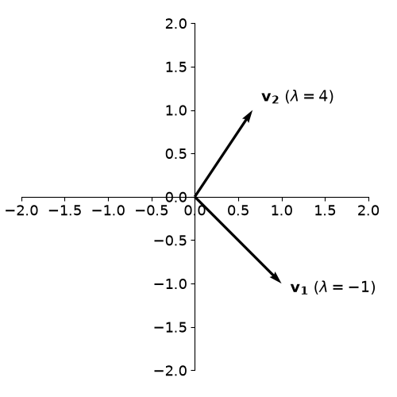
Example
Let us calculate the eigenvalues and eigenvectors of matrix \(A = \begin{pmatrix} -2 & 1 \\ 0 & -1 \end{pmatrix}\). We have:
Since we need \(p(\lambda)=0\) either one of the two factors has to be zero. So, \(\lambda_1=-2\) and \(\lambda_2=-1\).
For the eigenvectors:
\(\mathbf{\lambda_1 = -2}\):
\(\begin{align} A\mathbf{v} = \lambda\mathbf{v} \longrightarrow \begin{pmatrix} -2 & 1 \\ 0 & -1 \end{pmatrix}\begin{pmatrix} x \\ y \end{pmatrix}= -2\begin{pmatrix} x \\ y \end{pmatrix}\longrightarrow \cases{-2x + y = -2x \\ -y = -2y} \longrightarrow \cases{y = 0 \\ y = 0} \end{align}\)
Since \(y=0\), we choose \(\mathbf{v_1} = \begin{pmatrix} 1 \\ 0 \end{pmatrix}\).
\(\mathbf{\lambda_2 = -1}\):
\(\begin{align} A\mathbf{v} = \lambda\mathbf{v} \longrightarrow \begin{pmatrix} -2 & 1 \\ 0 & -1 \end{pmatrix}\begin{pmatrix} x \\ y \end{pmatrix}= -1\begin{pmatrix} x \\ y \end{pmatrix}\longrightarrow \cases{-2x + y = -x \\ -y = -y} \longrightarrow \cases{-x + y = 0 \\ y = y} \end{align}\)
The second equation is trivial and provides no information. From the first equation, since \(x=y\), we choose \(\mathbf{v_2} = \begin{pmatrix} 1 \\ 1 \end{pmatrix}\).
Tip
Note that the two eigenvalues \(\lambda_1 = -2\) and \(\lambda_2 = -1\) correspond to the elements of the main diagonal of the matrix \(A\). Whenever the matrix \(A\) is triangular, meaning all the elements below the main diagonal are \(0\), the eigenvalues will correspond to the elements of the main diagonal.
Vector decomposition#
Now suppose matrix \(A\) has eigenvalues \(\lambda_1\) and \(\lambda_2\), with corresponding eigenvectors \(\mathbf{u_1}\) and \(\mathbf{u_2}\). If \(\lambda_1 \ne \lambda_2\), then the vectors \(\mathbf{u_1}\) and \(\mathbf{u_2}\) are linearly independent meaning one can not be written as a multiple (multiplied by a real constant) of the other. Geometrically, this means that the directions corresponding to this two eigenvectors are not on the same line.
In two dimensions, this is enough to say that any given vector \(\mathbf{v}\) can be written as a linear combination of \(\mathbf{u_1}\) and \(\mathbf{u_2}\) (or that \(\mathbf{u_1}\) and \(\mathbf{u_2}\) consitute a basis of this space). We have:
for constants \(a_1\) and \(a_2\) to be determined.
But given that \(A\) is a linear transformation, it should hold that:
with the last step coming from the fact that \(\mathbf{u_1}\) and \(\mathbf{u_2}\) are eigenvectors of \(A\). Since \(A\mathbf{v}\) is also a vector in this space, we can go ahead and apply the transformation \(A\) again, and we will have:
So, in general:
or, in other words, if we know the eigenvectors and eigenvalues of \(A\) (with \(\lambda_1 \ne \lambda_2\)), and we know the coeffiencients \(a_1\) and \(a_2\) of the expansion of \(\mathbf{v}\) into the eigenvectors, then it is easy to calculate what is going to be the image ov vector \(\mathbf{v}\) by any number of successive applications of \(A\). This is also equivalent of applying the \(n\)-th power of matrix \(A\) to \(\mathbf{v}\).
This fact will have many important applications, as we will se next.
Structured models revisited#
Let us considered a structured population model defined by the projection matrix \(P=\begin{pmatrix} 1.5 & 2 \\ 0.08 & 0 \end{pmatrix}\) and an initial population vector given by \(\mathbf{n_0} = \begin{pmatrix} 105 \\ 1 \end{pmatrix}\). If we calculate the eigenvalues and eigenvectors, we will have:
Thus, we have \(\lambda_1=1.6\) and \(\lambda_2=-0.1\).
\(\mathbf{\lambda_1 = 1.6}\):
\(\begin{align} A\mathbf{v} = \lambda\mathbf{v} \longrightarrow \begin{pmatrix} 1.5 & 2 \\ 0.08 & 0 \end{pmatrix}\begin{pmatrix} x \\ y \end{pmatrix}= 1.6\begin{pmatrix} x \\ y \end{pmatrix}\longrightarrow \cases{1.5x + 2y = 1.6x \\ 0.08x = 1.6y} \longrightarrow \cases{x - 20y = 0 \\ x - 20y = 0} \end{align}\)
Since \(x=20y\), we choose \(\mathbf{u_1} = \begin{pmatrix} 20 \\ 1 \end{pmatrix}\).
\(\mathbf{\lambda_2 = -0.1}\):
\(\begin{align} A\mathbf{v} = \lambda\mathbf{v} \longrightarrow \begin{pmatrix} 1.5 & 2 \\ 0.08 & 0 \end{pmatrix}\begin{pmatrix} x \\ y \end{pmatrix}= -0.1\begin{pmatrix} x \\ y \end{pmatrix}\longrightarrow \cases{1.5x + 2y = -0.1x \\ 0.08x = -0.1y} \longrightarrow \cases{0.8x + y = 0 \\ 0.08x + 0.1y = 0} \end{align}\)
Since \(-\displaystyle\frac{4}{5}x=y\), we choose \(\mathbf{u_2} = \begin{pmatrix} 5 \\ -4 \end{pmatrix}\).
We can also note that the initial population vector can be decomposed into the eigenvectors \(\mathbf{u_1}\) and \(\mathbf{u_2}\) of the matrix \(P\) according to:
We know that to find the population vector for the following step, we have to apply the projection matrix on the current population vector. Thus:
If we perform successive applications of \(P\), we will finally have:
By decomposing into eigenvalues and eigenvectors, we know the behaviour of our population for any time \(t\), which is much easier than applying \(P\) a number \(t\) of times, or than calculating \(P^t\). Furthermore, as \(t\rightarrow\infty\) the first term will dominate (with the second term dying out) and the proportions for each age class in this population will be dictated by the vector \(\begin{pmatrix} 20 \\ 1 \end{pmatrix}\) (or, if we divide by the sum of the components: \(\displaystyle\frac{1}{21}\begin{pmatrix} 20 \\ 1 \end{pmatrix} = \begin{pmatrix} 95\% \\ 5\% \end{pmatrix}\).
In general the eigenvector corresponding to the largest eigenvalue (also called dominant eigenvalue) of the projection matrix, which is always real and positive, will correspond to the stable age distribution, for which our population vector converges after we wait enough time.
As we have seen, after enough time, the dominant eigenvalue will also correspond to the growth factor for each of the age classes. Thus, if \(\lambda_1>1\) the population size will increase, whereas if \(0<\lambda_1<1\) the population size will decrease.
Analysing change, continuously#
Average rate of change#
First watch this video for a short introduction to this section:
Instantaneous rate of change#
If we have a continuous function \(f(x)\), for each two points \(x_{0}\) and \(x_{1}\), we can define the average rate of change between these points by the ratio between how much \(f\) has changed and how much \(x\) has changed:
For points \(x_{0}\) and \(x_{1}\) this can be graphically represented by:
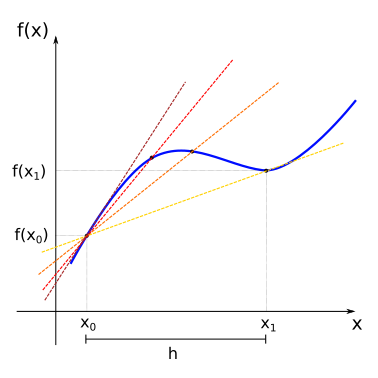
The line that passes through the points \((x_0, f(x_0))\) and \((x_1, f(x_1))\) (yellow line) is named secant line. As we have seen before in our treatment of linear functions, the slope of the secant line will be given by the average rate of change between this points (remember that the slope for linear functions is defined as \(m=\displaystyle\frac{\Delta y}{\Delta x})\).
Now consider that we change the value of \(x_1\) so that it slowly approaches \(x_0\) from the right. In this case, the secant lines also change (from yellow to red), as we change the image of \(x_1\) the function, \(f(x_1)\). In the limit where \(x_1\) is very close to \(x_0\), the secant line approaches the tangent (sark red line) of the function \(f(x)\) at the point \(x_0\) (the tangent is the straight line that “just touches” the curve at that point).
If we represent the slope of the tangent line at the point \(x_0\) by the term \(f'(x_0)\), we will have:
Since we can do the same process as we change the value \(x_0\), we define a new function \(f'(x_{0})\) which we call the derivative of the function \(f\) at the point \(x_0\), and its value tells us about the instantaneous rate of change of \(f\) at the point \(x_0\).
If we look instead at the interval between \(x_{0}\) and \(x_{1}\) and define \(h = x_1 - x_0\), if \(x_1\) approaches \(x_0\), then \(h\) approaches \(0\). and we would have for the derivative of \(f(x)\):
Visit this link for an interactive demonstration of the limit of the tangent curve.
Note
Note that in the previous expression the index \(0\) was omitted from \(x_0\). We will assume that the derivative is defined for all the points in the domain of the function \(f(x)\) for which the limit in the expression exists.
It is good to have a graphical intuition for when the derivative is not well defined. Some cases are shown below.
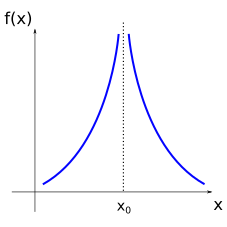
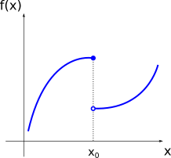
For the points where the function \(f(x)\) presents discontinuities, or for the points where it is simply not defined, the derivative will also not be defined.
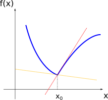
For the points where the curve of the function \(f(x)\) presents kinks, note that there are two tangent lines, one coming from the right (red line) and another coming from the left (yellow line). Since the function \(f'(x)\) must have only one value for the image of \(x\) (in other words, only one value for the slope of the tangent at point \(f(x)\)), then the derivative is not defined in this case.
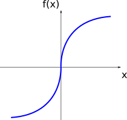
For the points where the function \(f(x)\) is locally vertical (in this case, for \(x=0\)), the slope of the tangent curve is infinite. Since infinite is not a real number, the derivative is not defined for those points.
Example
By the definition of the derivative of \(f(x)\):
Thus, if \(f(x)=x^2\), we will have:
So that the derivative of \(f(x)=x^2\) is the function \(f'(x)=2x\).
Note
Although limits of functions can be defined in a more rigorous way, in this course we will treat them more intuitively, and use, if required, the known rules for limits. Thus, if \(C\) is a constant, \(\lim_{x \rightarrow a} f(x) = L\), and \(\lim_{x \rightarrow a} g(x) = M\), it is generally valid that:
Other common notations for the derivative are given by:
Example
Derivatives (or rate of change) are needed everywhere in science. Some common examples are the velocity as the derivative of position and acceleration as the derivative of velocity. When asking yourself ‘how fast is the population growing?’ or ‘how steep is this mountain?’ you can find the answer by calculating the derivative of the population number or the height profile.
Visit this link for examples that provide demonstrations of the intuitive interpretation of the derivative.
Calculating derivatives#
It is possible to generalise the previous example for \(f(x)=x^2\) and obtain the derivative for any power function \(f(x)=x^n\) (\(n \ne 0\)):
Example
It is possible to show, from the definition of derivative and the rules for limits, that there are simple rules for derivatives when calculating them for a sum of functions or a product by a constant. If \(C\) is a constant, we generally have:
Thus, differentiating a given polynomial p(x) stands for differentiating each term separately and summing the result.
Example
For products and quotients of functions, however, we have different rules:
Tip
If you do not want to remember the quotients rule, you can use the product rule on \(f(x)j(x)\), with \(j(x)=g(x)^{-1}\) and use the chain rule to evaluate \(\frac{d}{dx} j(x)\).
Examples
Moreover, expressions for the derivatives of the other elementary functions can also be found:
\(f(x) = a^{x} \implies f'(x) = a^{x} \cdot (\ln a) ,\ (a > 0, a \neq 1)\)
\(\left(\mbox{in particular: }\ (e^{x})' = e^{x}\right)\)\(f(x) = \log_{a}x \implies f'(x) = \displaystyle\frac{1}{(\ln a)x}\)
\(\left(\mbox{in particular: }\ (\ln x)' = \displaystyle\frac{1}{x}\right)\)\(f(x) = \mbox{sin}(x) \implies f'(x) = \mbox{cos}(x)\)
\(f(x) = \mbox{cos}(x) \implies f'(x) = -\mbox{sin}(x)\)
Example
If \(f(x) = \mbox{tan}(x) = \displaystyle\frac{\mbox{sin}(x)}{\mbox{cos}(x)}\), then:
Chain rule#
The calculation of derivatives for more complicated functions can generally be made easier by breaking the function into components, for example:
\(f(x) = (3x^{2} - 2x + 1)^{3} = (g(x))^{3}\), where \(g(x) = 3x^{2} - 2x + 1\)
\(f(x) = \displaystyle\frac{\sqrt{2x - 1}}{1 + \sqrt{2x - 1}} = \displaystyle\frac{g(x)}{1 + g(x)}\), where \(g(x) = \sqrt{h(x)}\), and \(h(x) = 2x - 1\)
We have seen this before when discussing transformation of graphs. When one function is nested within the other, we have a composite function, or as for the last example above:
The derivative of composite functions in relation to the dependent variable is then given by the chain rule:
\(\displaystyle\frac{d}{dx}f(x) = \displaystyle\frac{d}{dx}f(g(x)) = \left(\displaystyle\frac{df}{dg}\right)\left(\displaystyle\frac{dg}{dx}\right)\)
\(\displaystyle\frac{d}{dx}f(x) = \displaystyle\frac{d}{dx}f(g(h(x))) = \left(\displaystyle\frac{df}{dg}\right) \left(\displaystyle\frac{dg}{dh}\right) \left(\displaystyle\frac{dh}{dx}\right)\)
The strategy then consists in identifying the nested functions, calculating their derivatives and multiplying the results.
Examples
If \(f(x) = (3x^{2} - 2x + 1)^{3}\), we have:
\[f(g) = g^{3} \implies \displaystyle\frac{df}{dg} = 3g^2\]\[g(x) = 3x^{2} - 2x + 1 \implies \displaystyle\frac{dg}{dx} = 6x - 2\]Thus:
\[\displaystyle\frac{df}{dx} = \left(\displaystyle\frac{df}{dg}\right)\left(\displaystyle\frac{dg}{dx}\right) = 3g^{2} \cdot g' = 3(3x^{2} - 2x + 1)^2(6x - 2)\]
If \(f(x) = \displaystyle\frac{\sqrt{2x - 1}}{1 + \sqrt{2x - 1}}\), then:
\[f(g) = \displaystyle\frac{g}{1+g} \implies \displaystyle\frac{df}{dg} = \frac{(1+g) - g}{(1+g)^2} = \frac{1}{(1+g)^2}\]\[g(h) = \sqrt{h} \implies \displaystyle\frac{dg}{dh} = \frac{1}{2}h^{-1/2}\]\[h(x) = 2x-1 \implies \displaystyle\frac{dh}{dx} = 2\]Thus:
\[\displaystyle\frac{df}{dx} = \left(\displaystyle\frac{df}{dg}\right) \left(\displaystyle\frac{dg}{dh}\right) \left(\displaystyle\frac{dh}{dx}\right) = \frac{1}{(1+\sqrt{2x - 1})^2}\cdot \frac{1}{2(\sqrt{2x - 1})}\cdot 2 = \frac{1}{(\sqrt{2x - 1})(1+\sqrt{2x - 1})^2}\]
If \(f(t) = 5 + 5\mbox{cos}\left[\displaystyle\frac{\pi}{12}(t - 3)\right]\), we have:
\[f(g) = 5 + 5g \implies \displaystyle\frac{df}{dg} = 5\]\[g(h) = \mbox{cos}(h) \implies \displaystyle\frac{dg}{dh} = -\mbox{sin}(h)\]\[h(t) = \frac{\pi}{12}(t - 3) \implies \displaystyle\frac{dh}{dt} = \frac{\pi}{12}\]Thus:
\[\displaystyle\frac{df}{dx} = \left(\displaystyle\frac{df}{dg}\right) \left(\displaystyle\frac{dg}{dh}\right) \left(\displaystyle\frac{dh}{dx}\right) = 5 \cdot \left(-\mbox{sin}(h)\right) \cdot \frac{\pi}{12} = -\frac{5\pi}{12}\mbox{sin}\left[\displaystyle\frac{\pi}{12}(t - 3)\right]\]For this last example if we plot the function \(f(t)=5 + 5\mbox{cos}\left[\displaystyle\frac{\pi}{12}(t - 3)\right]\) together with its derivative \(f'(t)=-\displaystyle\frac{5\pi}{12}\mbox{sin}\left[\displaystyle\frac{\pi}{12}(t - 3)\right]\) we will have:
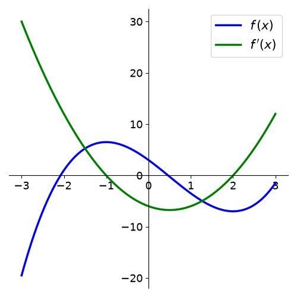
Try to compare the two graphs. What happens with the function \(f(t)\) on the intervals where the derivative \(f'(t)\) is positive or negative? What happens at the points where the derivative is zero?
Higher order derivatives#
If the derivative of a given function is also a “well-behaved” function (without kinks or discontinuities), then we can also calculate the derivative of the derivative. Thus:
The function \(f''(x)\) is called the second derivative with respect to \(x\).
We can continue this process and get higher-order derivatives:
assuming again that these functions are also well-behaved. Function \(f^{(n)}(x)\) is called the \(n\)-th derivative of \(f\) with respect to \(x\) (note the parenthesis on \((n)\) to distinguish from powers of \(f\)).
Examples
The velocity is the derivative of the position, and the acceleration is the derivative of the velocity. Therefore, acceleration is the second-order derivative of the position
Examples
\(f(x) = 3x^{2} - 6x + 2\), then:
\[f'(x) = 6x - 6\]\[f''(x) = 6\]Polynomials are always well-behaved and they are infinitely differentiable. However, if \(n\) is the degree of the polynomial (i.e. the largest exponent in the polynomial), we will have: \(p^{(k)}(x) = 0,\ \mbox{for}\ k \ge n+1\).
\(f(x) = e^{-x^{2}}\), then:
\[f'(x) = e^{-x^{2}} \cdot (-2x) = -2xe^{-x^{2}}\]\[\begin{split}\begin{align}f''(x) &= -2[e^{-x^{2}} + x(-2x)(e^{-x^{2}})] \\ &= -2e^{-x^{2}} + 4x^{2}e^{-x^{2}} \\ &= -2e^{-x^{2}}(1 - 2x^{2})\end{align}\end{split}\]
Functions of several variables#
A function \(z = f(x,y)\) of two dependent variables \(x\) and \(y\) defines a surface on the three dimensional \(xyz\)-space. If this function is well-behave it will be smooth, like if we applied different deformations on a rubber sheet. For smooth functions, we can calculate derivatives with respect to each of the dependent variables. This is written as:
The partial derivative informs us how the function \(f\) varies along the \(x\) (or the \(y\)) direction at a specific point.
Example
Consider \(f(x,y) = 4x^2y-2xy^3\). To compute the partial derivative with respect to \(x\) we consider all terms in \(y\) constants, and calculate the derivative as usual. For the partial derivative with respect to \(y\), we consider the \(x\) terms constant. We have:
Higher order partial derivatives can also be defined, and represented with the common notations:
with subscripts representing the variable and the order of differentiation.
For well-behaved functions, the order of the variables chosen to differentiate does not matter (a special case of what is called Schwarz’s theorem):
Example
Often, a quantity of interest does not depend only on one variable but on many. The population size of a species depends on various aspects, including the availability of food, the number of predators, and other environmental factors.
Analysing change, continuously (Part 2)#
In many different contexts we may be interested in finding the maximum or minimum values a given function may assume. This process is referred to as optimization.
In Ecology, some of the most common uses for optimization methods are:
1 - Statistical estimation and inference: optimizing the likelihood of a model and its parameters being true, for a given set of observations.
2 - resources management: finding a balance between different wildlife and economic priorities (market, legal, natural constraints)
3 - Optimality theory: how can the behavioural or life-history trade-offs result in optimal strategies for different organisms
Extreme values of functions#
For a given function \(f(x)\) that is continuous in an interval \(a \le x \le b\), there will always be a global maximum and a global minimum, points at which the function assumes its maximum and minimum values in the interval.
A function \(f(x)\) presents a local maximum value if for a given vicinity of the point \(x_0\), \(f(x_0)\) is greater than all the other \(f(x)\) for \(x\) in this vicinity. The analogous definition can be made for a local minimum value when \(f(x_0)\) is smaller than all the other \(f(x)\) in the vicinity. Local minima and local maxima constitue the local extrema for \(f(x)\), and with the set of all extrema we can find the global maximum and the global minimum.
An important result is that, if the function \(f\) has a local extremum at a given point \(x=c\) in that interval (\(a<c<b\)) and the derivative of the function exists at that point (in other words, if \(f'(c)\) is well defined), then we will have:
\(f'(c)=0\)
Warning
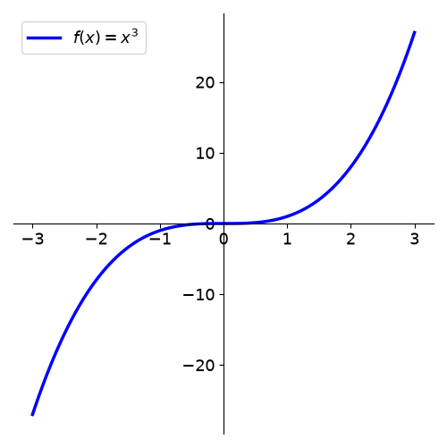
Note, however, that the contrary is not always true. If \(f'(c)=0\), not necessarily \(f(c)\) will be an extremum point. On the left plot, \(f(x)=x^3 \implies f'(x)=2x^2\), thus \(f'(0)=0\) but there is no extremum at \(x=0\) .
Thus the points \(x=c\), for which \(f'(c)\), will constitute candidates for local extrema, and will have to be evaluated under other sets of conditions. Also important to have in mind that point for which the derivative is not definided (kinks or discontinuities) may also constitute local extrema (see on the first figure).
In general, when searching for local extrema, we have to adopt the following rules:
Do not assume points \(x\) for which \(f'(x) = 0\) are extrema. They are candidates.
Check points where derivative is not defined.
Check endpoints of domain.
Tip
If possible, create a plot. Visuals are powerful tools and can help verify whether calculations have been done correctly.
Monotonicity and concavity#
Imagine a function \(f(x)\) defined in a given interval \(a \le x \le b\). For every \(x_1\) and \(x_2\) in this interval, if \(x_{2} > x_{1}\) implies that \(f(x_{2}) > f(x_{1})\) then the function is increasing in this interval. If on the other hand, \(x_{2} > x_{1}\) implies that \(f(x_{2}) < f(x_{1})\) then the function is decreasing in this interval. This can be graphically shown as:
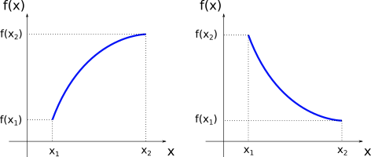
Note
Since we are using the stric inequalities (”\(>\)” or “\(<\)”) it can be added that the function is monotonic, or monotonically increasing or decreasing. If we had \(x_{2} > x_{1}\) implying that \(f(x_{2}) \ge f(x_{1})\) (or \(f(x_{2}) \le f(x_{1})\)), the function would be non-decreasing (or non-increasing).
Now suppose that \(f\) is well-behaved in a given interval \(a \le x \le b\) (in mathematical terms, we say: \(f\) is continuous and differentiable in \((a,b)\)), then an important results is that
In other words, if the derivative of function \(f\) is positive (negative) for every point \(x\) in a given interval then the function is increasing (decreasing) in this interval.
Example
Let us calculate the intervals where the function \(f(x) = x^{3} - \displaystyle\frac{3}{2}x^{2} - 6x + 3\) is increasing and decreasing. Since \(f(x)\) is continuos and differentiable for all real values of \(x\) (remember that all polynomial functions are well-behved), we can use the first derivative test:
and we see that \(f'(x)\) has roots in \(x=-1\) and \(x=2\). Since \(f'(x)\) is a polynomial of degree 2 with the coefficient of the leading term positive, it is concave up. From this, we can conclude that:
The following plot shows the function \(f(x)\) and its derivative. Compare the intervals where the derivative is positive (negative) with the intervals where the function \(f(x)\) is increasing (decreasing).

When we discussed polynomials of degree 2, depending on the sign of the coefficient of the leading term, we had the two cases:
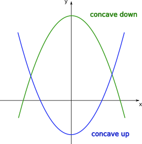
Let us now generalise the notion of concavity for any arbitrary function. Suppose \(f(x)\) is differentiable in a given interval \(a \le x \le b\) (in other words, the derivative \(f'(x)\) is well-defined for every point in this interval). Then we have the following results:
This means that if for a given function \(f(x)\) the slopes of the tangent lines are increasing in a given interval of \(x\), in this interval the function should resemble an “upwards U-shape”. If on the other hand, the slopes of the tangent lines are decreasing in this interval, the function should resemble a “downwards U-shape”. This can be visualised on the plots below.
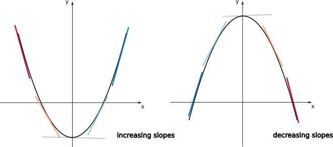
If the function \(f\) is twice differentiable in \(a \le x \le b\) (\(f''(x)\) is well-define for \(a \le x \le b\)), we can use the last two results to find a general criterium for concavity. This will be given by:
Example
If you have a population curve, these tools will help you analyze questions such as ‘How fast is the population growing?’ ‘Is the growth accelerating?’ or ‘Are any of these factors changing over different periods?
Example
Let us analyse the function \(f(x) = x^{3}-\displaystyle\frac{3}{2}x^{2}-6x+3\) again. We have:
The function f’’(x) has a root in \(x=\displaystyle\frac{1}{2}\). Since its slope is positive, we have:
On the plots below, compare the intervals where the second derivative is positive (negative) with the intervals where the function \(f(x)\) is concave up (concave down).
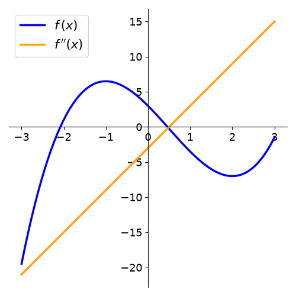
Finding extrema#
Back to our strategy for finding maxima or minima of functions, we first determine the set:
find all points \(c\) for which \(f'(c) = 0\) or all point \(c\) where \(f'(c)\) does not exist. These are called critical points.
find endpoints of domain of \(f\).
Additionally, if \(f\) is twice differentiable (in some interval containing \(c\)):
If \(f'(c) = 0\) and \(f''(c) < 0 \implies c\) is a local maximum (since the function is concave down)
If \(f'(c) = 0\) and \(f''(c) > 0 \implies c\) is a local minimum (since the function is concave up)
Example
Let us analyse the function \(f(x) = \displaystyle\frac{3}{2}x^{4}-2x^{3}-6x^{2}+2\), and find its local extrema. We have:
Since this is a polynomial function, the derivative is well-defined for all points. Also, for the critical points (roots of \(f'(x)\)) we have \(x=0\), \(x=-1\), and \(x=2\). Calculating the value of the second derivative at the critical points:
Now we can check on the plot of \(f(x)\) that we have successfully determined the local extrema.
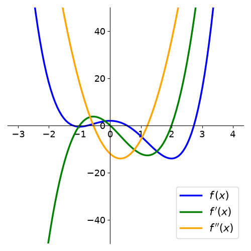
Inflection points#
As we saw before, given a function \(f(x)\), for some values of \(x\), there might be a change in the concavity of the function:
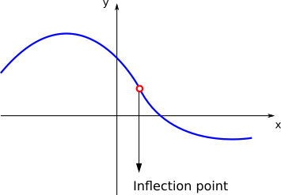
The points \(x\) for where the function changes its concavity are called inflection points. If \(f\) is twice differentiable and \(c\) is an inflection point, then \(f''(c)=0\).
Inflection points are the points where the function is (locally) steepest. It therefore helps us answer questions like when the growth/decline was strongest.
Note
Note again that the points \(x=c\) where \(f''(c)=0\) are only candidates for inflection points. See that if \(f(x)=x^{4}\), \(f''(x)=12x^{2}\). Then, \(f''(0)=0\), but \(x=0\) is not an inflection point of \(f\).
After calculating the candidate points \(x=c\), if the concavities of the function (given by the sign of the second derivative) to the left and to the right of \(c\) change, then \(c\) is an inflection point.
Example
Consider the Holling Type III functional response
where \(f(N)\) is prey consumption rate per predator, \(N\) is the prey population density, \(a\) is the attack rate, and \(h\) is handling time. Let us check if this function presents any inflection point. We have:
\(\begin{align}f'(N) &= \frac{2aN(1+ahN^{2})-aN^{2}(2ahN)}{(1+ahN^{2})^{2}} \\ &= \frac{2aN}{(1+ahN^{2})^{2}}\end{align}\)
\(\begin{align}f''(N) &=\frac{2a(1+ahN^{2})^{2}-2aN[2(1+ahN^{2})\cdot2ahN]}{(1+ahN^{2})^{4}} \\ &=\frac{2a(1+2ahN^{2}+a^{2}h^{2}N^{4})-2a[4ahN^{2}+4a^{2}h^{2}N^{4}]}{(1+ahN^{2})^{4}} \\ &=\frac{2a(1-3ahN^{2})}{(1+ahN^{2})^{3}}\end{align}\)
See that the function \(f''(N)\) has two roots: \(N=-\sqrt{\displaystyle\frac{1}{3ah}}\) and \(N=\sqrt{\displaystyle\frac{1}{3ah}}\). Since \(N\) is a population density, it only makes sense to analyse \(N \ge 0\). It is also possible to show that:
This means that we have a change of concavity at the point \(N=\sqrt{\displaystyle\frac{1}{3ah}}\) and thus this is and inflection point of this curve.
Analyse how the function \(f(N)\) changes with \(N\).
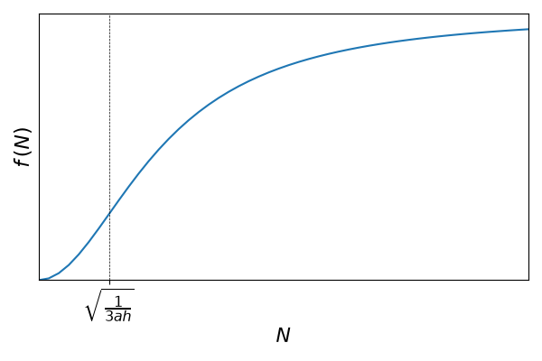
How does this function compares with the Holling type II functional response?
Tip
For the intervals where the function is concave up you can also think of it as representing “accelerated change” of that function (since the first derivative, the “velocity” is increasing), while the intervals where it is concave down represent “deccelerated change” of the function. Understanding this can be particularly important if you function has a specific biological meaning, as in the previous example.
Series expansions#
From the formal definition of a derivative
which means that if \(x\) is sufficiently close to \(a\), the average rate of change is sufficiently close to the value of the derivative at that point. From the previous approximation, we have:
which provides a linear approximation of \(f(x)\) around \(a\) (see that if \(\alpha= f(a)\) and \(\beta=f'(a)\), both constants, then \(f(x) = \alpha+\beta(x-a)\), which can easily be arranged on the form \(y=mx+b\)).
Example
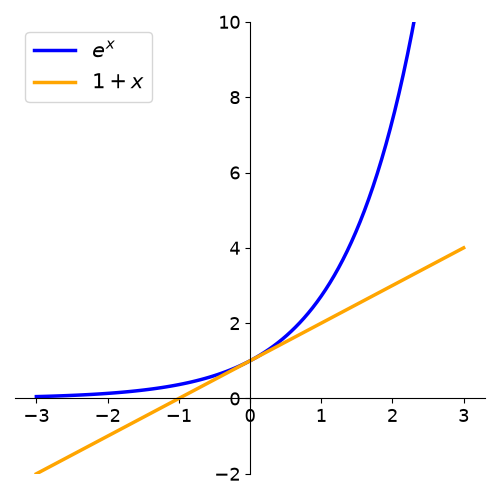
Say we have \(f(x)=e^{x}\) and we want to use this linear expression to approximate the function close to \(a=0\):
since \(f'(x) = e^{x}\) and thus \(f(0)=f'(0)=1\).
The approximation is reasonable if \(x\) very close to \(0\), but fails when \(x\) increasingly departs from \(0\).
One way of trying to make the approximation better is to add terms of higher order of \(x\). Suppose we want to approximate the function \(f(x)\) at point \(a\) by a given polynomial of degree \(n\)
so that the derivatives of \(f(x)\) and \(P(x)\) are the same at \(x=a\):
But for the polynomial, we have:
where \(n! = n\cdot(n-1)\cdot(n-2) \cdots 3 \cdot 2 \cdot 1\) is the factorial of \(n\).
Thus, by making derivatives of \(f(x)\) and \(P(x)\) equal at \(x=a\), we obtain:
The polynomial with these coefficients is called Taylor polynomial of degree \(n\) at \(x = a\):
Example
To find approximation of degree 3 for \(f(x)=e^{x}\), at \(x=0\), we have:
Thus,
See how the approximation to the function \(f(x)=e^{x}\) at \(x=0\) gets increasingly better when more terms are added to the polynomial.
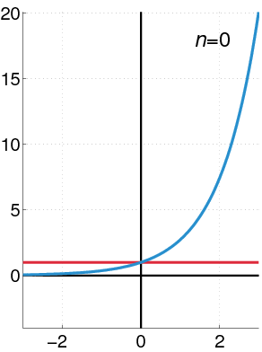
Example
For the function \(f(x)=\displaystyle\frac{1}{1-x}\ (x\neq1)\) at \(x=0\), we have:
Thus the Taylor polynomial of degree \(n\) will be:
For some functions, the approximation \(f(x)=P_n(x)\) at a given reference point \(x=a\) can be made increasingly better by adding more terms to \(P(x)\), so that in the limit \(n\rightarrow \infty\) the Taylor polynomials (called Taylor series in this limit) for the functions \(e^{x}\), \(\mbox{sin}(x)\), \(\mbox{cos}(x)\) converge exactly for all values of \(x\). For other functions, such as \(\mbox{ln}(1+x)\) and \(\displaystyle\frac{1}{1-x}\), there is a restricted range of values of \(x\) for which the approximation can be made better by adding terms.
We have the following approximations by Taylor series, with ranges in \(x\), at \(x = 0\):
Knowing the Taylor series often gives insight into the properties of a function.
Calculating accumulated change#
Series#
For every sequence \(\{a_n\}\) of real numbers, it is possible to define another sequence \(\{S_n\}\) for which the elements are given by the sum of the first \(n\) terms of the sequence \(\{a_n\}\):
The sequence \(\{S_n\}\) is called a series (or an infinite series, to emphasize the sum over increasing number of terms \(\{a_n\}\)).
The same way as we asked about \(\lim a_n\), we can ask if \(\lim S_n\) exists. If it exists, or, in other words, if the sum of infinite terms \(\{a_n\}\) is equal to a finite number, we say that the series \(S_n\) is convergent.
Examples
The following expressions are example of convergent series:
Calculating areas#
The idea of summing infinite quantities can be used to solve the problem of determining the area below a given curve. Let \(f(x)\) be a function defined on the interval \(a \le x \le b\) as:
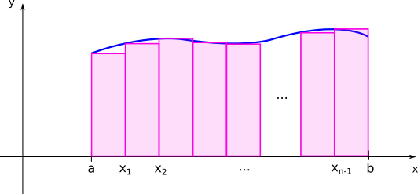
The area below the curve of \(f(x)\) can be found dividing the interval \(a \le x \le b\) into \(n\) subintervals:
where each interval defines a rectangle of height \(f(x_i)\) and width \((x_{i+1}-x_i) = \Delta x_i = \displaystyle\frac{(b-a)}{n}\). The area below the curve will then be approximately the sum of the areas of the rectangles
As we increasethe number of intervals \(n\), while decreasing the widths of each rectangle, the sum of the areas of the rectangles gives a better approximation of the area below the curve. The exact result is given by the limit \(n \rightarrow \infty\). In this limit, the sum is represented by the following symbol:
If this limit exists, we say that the function \(f\) is integrable on the interval \(a \lt x \lt b\) and denote the limit by the definite integral \(\int_a^b f(x)dx\).
The interpretation of the integral as area can be generalized for when \(f(x)\) assumes negative values
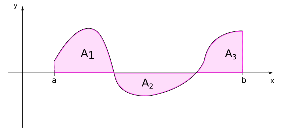
In the case of the previous figure, we will have:
Other intuitive results related to the calculation of the area are:
Furthermore, some of the properties of the integral follows directly from the properties of limits:
Fundamental theorem of Calculus#
The problem of calculating integrals as limits of sums requires specific methods for each function and becomes quite impractical. Fortunately, this problem can be solved with the very important result that the area problem is intrinsically related to the tangent problem.
Suppose we define a function \(F(x)\) that gives the area below the curve \(f(u)\) from \(a\) until a variable value \(x\). By definition:
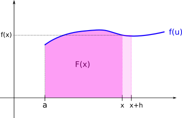
If we consider a small increment \(h\) to \(x\), the new area below the curve shall be given by:
The difference between these two areas shall be approximately given by the area of the retangle with width \(h\) and height \(f(x)\):
But see that in the limit where the increment \(h\) gets very small, the approximation gets exactly equal to the increment in area, and we obtain the definition of the derivative of \(F(x)\):
This results is known as the Fundamental theorem of Calculus, and it say that the instantaneous rate of change of the area below a given curve \(f\) at a point \(x\) is given by the value of the function at that point. In other words, the area \(F(x)\) is a function that, if differentiated, gives the function \(f(x)\).
The function \(F(x)\) is then called an antiderivative of \(f(x)\). In general, there is a family of antiderivates of \(f(x)\), since \(\displaystyle\frac{d(F(x) + C)}{dx}=\displaystyle\frac{dF}{dx}=f(x)\), independent of the value of the constant \(C\). We therefore call indefinite integral:
It also directly follows that
Thus the problem of calculating the area below the curve \(f(x)\) from \(b\) to \(c\), which, by definition, is given by the infinite sum of terms \(f(x_i)\Delta x_i\) (with \(\Delta x_i \rightarrow 0\)), can be reduced to obtaining the antiderivative of \(f\), \(F(x)\), and subtracting the values of this function at points \(c\) and \(b\). The main problem then becomes how to calculate the antiderivates of a given function \(f(x)\), for which different methods can be used.
Calculating integrals#
The simplest integrals can be calculated by inverting the differentiation of fundamental functions, as
This are obtained simply because we know that the derivative of the functions on the righ-hand sides of the equations give exactly the function that is being integrated. When the integrals are not so simple, we must apply other methods to turn them into integrals we know.
Integration by substitution#
This method consists in finding an appropriate substitution of the variable of integration so that we end up with a simpler integral to calculate.
Examples
\(\int\frac{1}{\sqrt{x+4}}dx\)
Note that if \(u=x+4 \implies \displaystyle\frac{du}{dx}=1 \implies du=dx\). Thus, the integral can be given by:
\[\int u^{-\frac{1}{2}}du = \frac{1}{\left(-\frac{1}{2}+1\right)} \cdot u^{\frac{1}{2}} + C = 2\sqrt{x+4} + C.\]Note
Note that three mathematicians die everytime we operate with \(du\) and \(dx\) as if they were numbers on a fraction. Formally, the correct substitution on the integral would be given by a function \(u=u(x)\), so that \( \int f(u(x)) u'(x)dx = \int f(u)du\). But we can procede with the heresy above as long as we have this in mind.
\(\int xe^{(x^2-1)}dx\)
See that \(u=x^2-1 \implies \displaystyle\frac{du}{dx}=2x \implies dx=\displaystyle\frac{du}{2x}\). Then:
\[\int \frac{1}{2}e^{u}du = \frac{1}{2}e^u + C = \frac{e^{(x^2-1)}}{2} + C \]
Integration by parts#
When integrating by parts, we have to find an appropriate association \((u=u(x), v=v(x))\), so that:
Example
\(\int x\ln x\, dx \)
Note that
\[\begin{split}\begin{align} u=\ln x \implies u' = \displaystyle\frac{1}{x} \\ v'=x \implies v=\displaystyle\frac{x^2}{2} \end{align}\end{split}\]Thus:
\[\begin{split}\begin{align}\int x\ln x\, dx &= \frac{x^2}{2}\ln x - \int \frac{x^2}{2} \cdot \frac{1}{x}dx \\ &= \frac{x^2 \ln x}{2} - \frac{1}{2}\int xdx \\ &= \frac{x^2 \ln x}{2} - \frac{1}{4}x^2 + C \\ &= \frac{1}{4} x^2 (2\ln x - 1) + C \end{align}\end{split}\]\(\int xe^x \,dx\)
Note that
\[\begin{split}\begin{align} u=x \implies u'=1 \\ v'=e^x \implies v=e^x \end{align}\end{split}\]Thus:
\[\begin{split}\begin{align}\int xe^xdx &= xe^x - \int e^x dx \hspace{0.1cm} \\ &= xe^x-e^x + C \\ &= e^x (x-1) + C \end{align}\end{split}\]
Tip
For complicated integrals, computer algebra programs like Mathematica or Sympy can be helpful. An especially user-friendly option is the website WolframAlpha.
Integration by partial fractions#
If the integral has the form
where the degree of \(P(x)\) is smaller than the degree of \(Q(x)\), and \(Q(x)=a(x-x_1)(x-x_2)\cdots(x-x_n)\), we can write
with \(\{A_n\}\) to be determined.
Example
\(\int \frac{1}{x(x-1)}\, dx\)
First, note that \(\displaystyle\frac{1}{x(x-1)} = \displaystyle\frac{A}{x} + \displaystyle\frac{B}{(x-1)} \implies 1 = A(x-1) + Bx \implies 1 = x(A+B) - A\). By comparing the coeffients of the terms in \(x\) and the terms independent of \(x\), we obtain:
\[\begin{split}\begin{cases} A + B &= 0\\ -A &= 1 \end{cases} \implies \begin{cases} A &= -1 \\ B &= 1\end{cases}\end{split}\]Thus:
\[\frac{1}{x(x-1)} = -\frac{1}{x} + \frac{1}{x-1}\]Then we will have for the integral:
\[\begin{split}\begin{align} \int\frac{1}{x(x-1)}dx &= \int\left(-\frac{1}{x}+\frac{1}{x-1}\right)dx \\ &= -\int \frac{1}{x}dx + \int\frac{1}{x-1}dx \\ &= - \ln|x| + \ln|x-1| + C \\ &= \ln \left|\frac{x-1}{x}\right| + C\end{align}\end{split}\]
Exercise Set 1#
An autocatalytic reaction uses its resulting product for the formation of a new product, as in the reaction
\[A + X \rightarrow X\]If we assume that this reaction occurs in a closed vessel, then the reaction rate is given by
\[ r(x) = kx(a - x) \]for \(0 \le x \le a\), where \(a\) is the initial concentration of \(A\) and \(x\) is the concentration of \(X\).
(a) Show that \(r(x)\) is a polynomial and determine its degree.
(b) Without using any graphic visualiser, graph \(r(x)\) for \(k = 2\) and \(a = 6\). Find the value of \(x\) at which the reaction rate is maximal.
Find the maximum/minimum value of the following polynomials
(a) \(p(x) = x^2 - 2x - 3\)
(b) \(p(x) = -x^2 - 6x + 8\)
(Hint: Calculate the roots and consider the symmetry of the parabola)
There is a function that is frequently used to describe the per capita growth rate of organisms when the rate depends on the concentration of some nutrient and becomes saturated for large enough nutrient concentrations. If we denote the concentration of the nutrient by \(N\), then the per capita growth rate \(r(N)\) is given by the Monod growth function
\[ r(N)=\frac{aN}{k+N},\ \ \ N \ge 0 \]where \(a\) and \(k\) are positive constants.
(a) Use Python or r to investigate the Monod growth function. Graph \(r(N)\) for (i) \(a = 5\) and \(k = 1\), (ii) \(a = 5\) and \(k = 3\), and (iii) \(a = 8\) and k = 1. Place all three graphs in the same coordinate system.
(b) On the basis of the graphs in (a), describe in words what happens when you change \(a\).
(c) On the basis of the graphs in (a), describe in words what happens when you change \(k\).
The function
\[ f(x) = \frac{x^n}{b^n + x^n},\ \ \ x \ge 0 \]where \(n\) is a positive integer and \(b\) is a positive real number, is used in biochemistry to model reaction rates as a function of the concentration of some reactants
(a) Use Python or r to graph \(f(x)\) for \(n = 1, 2,\ \mbox{and}\ 3\) in the same coordinate system when \(b = 2\).
(b) Where do the three graphs in (a) intersect?
(c) What happens to \(f(x)\) as \(x\) gets larger?
(d) For an arbitrary positive value of \(b\), show that \(f (b) = 1/2\). On the basis of this demonstration and your answer in C. , explain why \(b\) is called the half-saturation constant.
The file words_moby_dick.csv contains data on the cumulative distribution of the number of times specific words occur in the text of the novel Moby Dick, by Herman Melville. Assume that this distribution is a power law of the form
\[ y = x^D \](a) Using the provided data, and r/Python, estimate the exponent of this power law. (Hint: If you plot this data in log-log scale, what should correspond to the exponent \(D\)?)
(b) Can you think of a better way to estimate D?
Assume that a population size at time \(t\) is \(N(t)\) and that
\[ N(t) = 40 \cdot 2^t,\ \ \ t \ge 0 \](a) Find the population size at time t = 0.
(b) Show that
\[ N(t) = 40\, \mbox{e}^{t\, ln 2},\ \ \ t \ge 0 \](c) How long will it take until the population size reaches 1000?
(Hint: Find \(t\) so that \(N(t) = 1000\).)
(Adapted from Moss, 1980) Hall (1964) investigated the change in population size of the zooplankton species Daphnia galeata mendota in Base Line Lake, Michigan. The population size \(N(t)\) at time \(t\) was modeled by the equation
\[ N(t) = N_0\mbox{e}^{rt} \]where \(N_0\) denotes the population size at time \(0\). The constant \(r\) is called the intrinsic rate of growth.
(a) Plot \(N(t)\) as a function of \(t\) if \(N_0 = 100\) and \(r = 2\). Compare your graph against the graph of \(N(t)\) when \(N_0 = 100\) and \(r = 3\). Which population grows faster?
(b) The constant \(r\) is an important quantity because it describes how quickly the population changes. Suppose that you determine the size of the population at the beginning and at the end of a period of length \(1\), and you find that at the beginning there were \(200\) individuals and after one unit of time there were \(250\) individuals. Determine \(r\). (Hint: Consider the ratio \(N(t+1)/N(t)\).)
Fish are indeterminate growers; that is, they grow throughout their lifetime. The growth of fish can be described by the von Bertalanffy function
\[ L(x) = L_{\infty}(1-\textrm{e}^{-kx} ) \]for \(x \ge 0\), where \(L(x)\) is the length of the fish at age \(x\) and \(k\) and \(L_{\infty}\) are positive
(a) Using Python or r, graph \(L(x)\) for \(L_{\infty} = 20\), for (i) \(k = 1\) and (ii) \(k = 0.1\).
(b) For \(k = 1\), find \(x\) so that the length is 90% of \(L_{\infty}\). repeat for 99% of \(L_{\infty}\). Can the fish ever attain length \(L_{\infty}\)? Interpret the meaning of \(L_{\infty}\).
(c) Compare the graphs obtained in A. Which growth curve reaches 90% of \(L_{\infty}\) faster? Can you explain what happens to the curve of \(L(x)\) when you vary \(k\) (for fixed \(L_{\infty}\))?
For the following pairs of functions, plot the ratio (quotient) between the two using R or python. Based on the behaviour of the ratio when \(x \rightarrow \infty\) (very large values of \(x\)), how does each of these functions compare to the other in the velocity that they grow?
(a) \( f(x) = e^x \quad \text{ and } \quad g(x) = x^2 \)
(b) \( f(x) = e^x \quad \text{ and } \quad g(x) = x^{20} \)
(c) \( f(x) = x \quad \text{ and } \quad g(x) = \log(x) \)
A community measure that takes both species abundance and species richness into account is the Shannon diversity index \(H\). To calculate \(H\), the proportion \(p_i\) of species \(i\) in the community is used. Assume that the community consists of \(S\) species. Then
\[ H = -\sum_{i=1}^S p_i\, \textrm{ln}\, p_i = -( p_1 \textrm{ln}\, p_1 + p_2 \textrm{ln}\, p_2 + \cdots + p_S \textrm{ln}\, p_S ) \]
(a) Assume that \(S = 5\) and that all species are equally abundant; that is, \(p_1 = p_2 = \cdots = p_5\). Compute \(H\).
(b) Assume that \(S = 10\) and that all species are equally abundant; that is, \(p_1 = p_2 = \cdots = p_{10}\). Compute \(H\).
(c) A measure of equitability (or evenness) of the species distribution can be measured by dividing the diversity index \(H\) by \(\textrm{ln}\, S\). Compute \(H/\textrm{ln}\, S\) for \(S = 5\) and \(S = 10\).
Exercise Set 2#
Solve the following systems of linear equations
\[\begin{split} \mbox{(a)} \ \begin{cases} 5x - y + 2z = 6 \\ x + 2y - z = -1 \\ 3x + 2y - 2z = 1\\ \end{cases} \end{split}\]
\[\begin{split} \mbox{(b)} \ \begin{cases} 2x - y + 3z = 3 \\ 2x + y + 4z = 4 \\ 2x - 3y + 2z = 2\\ \end{cases} \end{split}\]
Three different species of insects are reared together in a laboratory cage. They are supplied with two different types of food each day. Each individual of species 1 consumes 3 units of food \(A\) and 5 units of food \(B\), each individual of species 2 consumes 2 units of food \(A\) and 3 units of food \(B\), and individual of species 3 consumes 1 unit of food \(A\) and 2 units of food \(B\). Each day, 500 units of food \(A\) and 900 units of food \(B\) are supplied. How many individuals of each species can be reared together? Is there more than one solution? What happens if we add 550 units of a third type of food, called \(C\), and each individual of species 1 consumes 2 units of food \(C\), each individual of species 2 consumes 4 units of food \(C\), and each individual of species 3 consumes 1 unit of food \(C\)?
Networks are abstractions of real systems used to identify and study patterns of connectivity between the individual units that compose those systems. Networks (often referred to as graphs) are mathematically defined as a set of nodes, or vertices, (representing the individual units) and a set of links, or connections, between these nodes, which account for the interaction patterns within the studied systems. In Ecology, graphs have been widely used in studies investigating food-webs, plant-pollinator interactions, and disease transmission in populations.
If the nodes of a network of size \(N\) are indexed with positive integers such as \(i = 1, 2, \ldots, N\), an useful method for representing the structure of a network is to construct a matrix \(A\) for which the elements \(a_{ij}\) are given by:
\[\begin{split}a_{ij} = \begin{cases}1,\ \mbox{if nodes}\ i \ \mbox{and}\ j \ \mbox{are linked} \\ 0,\ \mbox{otherwise} \end{cases}\end{split}\]Matrix \(A\) is called the adjacency matrix of the network. One example of a network with \(6\) nodes is shown below.
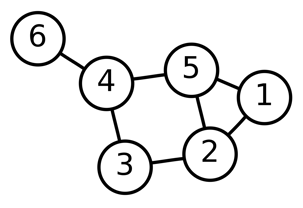
(a) Based on the graphical representation of this network, write down its adjacency matrix.
(b) By the definition of the adjacency matrix, the sum of the matrix elements on row \(i\), \(k_i = \sum_{j=1}^N a_{ij}\), corresponds to the number of links of node \(i\). The quantity \(k_i\) is called the degree of node \(i\). Calculate the corresponding degrees for each node on the previous network.
(c) The Laplacian matrix is a mathematical object that can be used to find many useful properties of a network. By definition, \(L\) is constructed as
\[ L = D - A \]
Where \(A\) is the adjacency matrix, and \(D\) is the degree matrix. The degree matrix \(D\) is a diagonal matrix which contains information about the degree of each node. With your answer for itens (a) and (b), calculate \(L\).
(d) Use r/Python to numerically calculate the eigenvalues of the Laplacian matrix.
Write each system in matrix form
\[\begin{split} \mbox{(a)} \ \begin{cases} 2x_2-x_1 = x_3 \\ 4x_1 + x_3 = 7x_2 \\ x_2 - x_1 = x_3\\ \end{cases} \end{split}\]
\[\begin{split} \mbox{(b)} \ \begin{cases} 2x_1 - 3x_2 = 4 \\ -x_1 + x_2 = 3 \\ 3x_1 = 4\\ \end{cases} \end{split}\]
Suppose that
\[\begin{split}A = \begin{pmatrix} 2 & 4 \\ 3 & 6 \end{pmatrix} \ \ \ \text{,}\ \ \ X = \begin{pmatrix} x \\ y \end{pmatrix} \ \ \ \text{and}\ \ \ B = \begin{pmatrix} b_1 \\ b_2 \\ \end{pmatrix}\end{split}\](a) Write \(AX = B\) as a system of linear equation.
(b) Show that if
\[\begin{split} B = \begin{pmatrix} 3 \\ \frac92 \\ \end{pmatrix} \end{split}\]then \(AX = B\) has infinitely many solutions. Graph the two straight lines associated with the corresponding system of linear equations, and explain why the system has infinitely many solutions.
(c) Find a column vector
\[\begin{split}B = \begin{pmatrix} b_1 \\ b_2 \\ \end{pmatrix}\end{split}\]so that \(AX = B\) has no solutions.
Assume that a population is divided into three age classes and that 80% of the individuals age 0 and 10% of the individuals age 1 survive until the end of the next breeding season. Assume further that individuals age 1 have an average of 1.6 offspring and individuals age 2 have an average of 3.9 offspring. If, at time 0, the population consists of 1000 individuals age 0, 100 individuals age 1, and 20 individuals age 2, find the projection matrix and the age distribution at time 3.
Consider the following projection matrix representing a population with five age classes:
\[\begin{split} P = \begin{pmatrix} 0 & 5 & 3 & 2 & 1 \\ 0.9 & 0 & 0 & 0 & 0 \\ 0 & 0.3 & 0 & 0 & 0 \\ 0 & 0 & 0.1 & 0 & 0 \\ 0 & 0 & 0 & 0.05 & 0 \\ \end{pmatrix} \end{split}\]
(a) Making use of Python or R code, begin with a population distributed as \((0,0,0,0,10)\) individuals at time \(t=0\), project the population at time \(t=20\), and plot the total number over time. Plot the logarithm of the total population over time.
(b) repeat the above but begin with \((80,16,5,1,1)\) individuals. How do these results compare to the results in (a) ?
In the problems below, find the eigenvalues \(\lambda_1\) and \(\lambda_2\) and corresponding eigenvectors \(\mathbf{v_1}\) and \(\mathbf{v_2}\) for each matrix \(B\). Determine the equations of the lines through the origin in the direction of the eigenvectors \(\mathbf{v_1}\) and \(\mathbf{v_2}\), and graph the lines together with the eigenvectors \(\mathbf{v_1}\) and \(\mathbf{v_2}\) and the vectors \(A\mathbf{v_1}\) and \(A\mathbf{v_2}\).
\[\begin{split} \text{(a)} \ \ B = \begin{pmatrix} 2 & 3\\ 0 & -1 \end{pmatrix} \end{split}\]
\[\begin{split} \text{(b)} \ \ B = \begin{pmatrix} 3 & 6\\ -1 & -4 \end{pmatrix} \end{split}\]
Suppse that
\[\begin{split} P = \begin{pmatrix} 0.5 & 2.3\\ a & 0 \end{pmatrix} \end{split}\]
is the projection matrix of a population with two age classes. For which values of \(a\) does this population grow?
Suppose that
\[\begin{split} P = \begin{pmatrix} 0.5 & 2.0\\ 0.1 & 0 \end{pmatrix} \end{split}\]
is the projection matrix of a population with two age classes.
(a) If you were to manage this population, would you need to be concerned about its long-term survival?
(b) Suppose that you can improve either the fecundity or the survival of the zero-year-olds, but due to physiological and environmental constraints, the fecundity of zero-year-olds will not exceed 1.5 and the survival of zero-year-olds will not exceed 0.4. Investigate how the growth rate of the population is affected by changing either the survival or the fecundity of zero-year-olds, or both. What would be the maximum achievable growth rate?
(c) In real situations, what other factors might you need to consider when you decide on management strategies?
Exercise Set 3#
Island Model Assume that a species lives in a habitat that consists of many islands close to a mainland. The species occupies both the mainland and the islands, but, although it is present on the mainland at all times, it frequently goes extinct on the islands. Islands can be recolonized by migrants from the mainland. The following model keeps track of the fraction of islands occupied: Denote the fraction of islands occupied at time \(t\) by \(p(t)\). Assume that each island experiences a constant risk of extinction and that vacant islands (the fraction \(1-p\)) are colonized from the mainland at a constant rate. Then
\[ \frac{dp}{dt}=c(1-p)-ep \]where \(c\) and \(e\) are positive constants.
(a) The gain from colonization is \(f (p) = c(1 - p)\) and the loss from extinction is \(g(p) = ep\). Graph (without graph visualisers) \(f(p)\) and \(g(p)\) for \(0 \le p \le 1\) in the same coordinate system. Explain why the two graphs intersect whenever \(e\) and \(c\) are both positive. Compute the point of intersection and interpret its biological meaning.
(b) The parameter \(c\) measures how quickly a vacant island becomes colonized from the mainland. The closer the islands, the larger is the value of \(c\). Use your graph in (a) to explain what happens to the point of intersection of the two lines as c increases. Interpret your result in biological terms.
Biotic Diversity (Adapted from Valentine, 1985.) Walker and Valentine (1984) suggested a model for species diversity which assumes that species extinction rates are independent of diversity but speciation rates are regulated by competition. Denoting the number of species at time \(t\) by \(S(t)\), the speciation rate by \(b\), and the extinction rate by \(a\), they used the model
\[ \frac{dS}{dt} = S\left[b\left(1-\frac{S}{K}\right)-a \right] \]where \(K\) denotes the number of “niches”, or potential places for species in the ecosystem.
(a) Find possible equilibria (\(dS/dt = 0\)) under the condition \(a < b\).
(b) Use your result in (a) to explain the following statement by Valentine (1985):
Quotation
“In this situation, ecosystems are never ‘full’, with all potential niches occupied by species so long as the extinction rate is above zero.”
(c) What happens when \(a \ge b\)?
Find a point on the curve
\[y = 1 - 3x^3\]whose tangent line is parallel to the line \(y = -x\). Is there more than one such point? If so, find all other points with this property.
Find a point on the curve
\[y = 2x^3 - 4x + 1\]whose tangent line is parallel to the line \(y-2x = 1\). Is there more than one such point? If so, find all other points with this property.
In the following, use the product and quotient rules to find the derivative with respect to the independent variable.
(a) \(f(x) = (2x^3 - 1)(3 + 2x^2)\)
(b) \(h(s) = (4 - 3s^2 + 4s^3)^2\)
(c) \(f(x) =\sqrt{3x}(x^2 - 1)\)
(d) \(g(t) = 4(3t^2 - 1)(2t + 1)\)
(e) \(f(x) = 3(x^2 + 2)(4x^2 - 5x^4) - 3\)
(f) \(g(x) = \displaystyle\frac{1 - 4x^3}{1 - x}\)
(g) \(h(x) = \displaystyle\frac{1 + 2x^2 - 4x^4}{3x^3 - 5x^5}\)
(h) \(f(t) =\displaystyle\frac{3 - t^2}{(t + 1)^2}\)
(i) \(h(s) = \displaystyle\frac{2s^3 - 4s^2 + 5s - 7}{(s^2 - 3)^2}\)
(j) \(g(s) = \displaystyle\frac{s^{1/7} - s^{2/7}}{s^{3/7} + s^{4/7}}\)
Logistic Growth
(a) Find the derivative of the logistic growth curve
\[N(t)=\frac{K}{1+\left(\frac{K}{N(0)}-1\right)e^{-rt}}\]where \(r\) and \(K\) are positive constants and \(N(0)\) is the population size at time \(0\).
(b) Show that \(N(t)\) satisfies the equation
\[\frac{dN}{dt}=rN\left(1-\frac{N}{K}\right)\][Hint: Use the function \(N(t)\) given in (a) for the right-hand side, and simplify until you obtain the derivative of N(t) that you computed in A.]
(c) What happens to the per-capita rate of growth \(\frac{1}{N}\frac{dN}{dt}\) as you increase N? What biological principle and what type of interaction is your model describing?
In the following, find the derivative with respect to the independent variable (Hint: use the chain rule).
(a) \(f(x) = \mbox{sin}(e^{2x} + x)\)
(b) \(h(x) = \mbox{exp}[x^2 - 2 \mbox{cos}\, x]\)
(c) \(f(x) =\displaystyle\frac{x-2^{−x}} {1+x2^{−x}}\)
(d) \(g(t) = \mbox{log}\left(\displaystyle\frac{1 - t}{1 + 2t}\right)\)
(e) \(f(t) = \mbox{sin}(\mbox{ln}(3t))\)
(f) \(g(x) = \mbox{ln}(\mbox{cos}(1 - x))\)
(g) \(h(x) = \displaystyle\frac{\sqrt{x^2 - 1}}{2+\sqrt{x^2+1}}\)
(h) \(f(t) =\sqrt[3]{t^2+\sqrt{1-t}}\)
The functional responses of some predators are sigmoidal; that is, the number of prey attacked per predator as a function of prey density has a sigmoidal shape. If we denote the prey density by \(N\), the predator density by \(P\), the time available for searching for prey by \(T\), and the handling time of each prey item per predator by \(T_h\), then the number of prey encounters per predator as a function of \(N\), \(T\), and \(T_h\) can be expressed as
\[ f (N, T, T_h) = \frac{b^2N^2T}{1 + cN + bT_hN^2} \]where \(b\) and \(c\) are positive constants.
(a) Calculate the first-order partial derivative of \(f(N, T, T_h)\) with respect to the prey density \(N\). If \(N\) increases, what happens to \(f(N, T, T_h)\)?
(b) Calculate the first-order partial derivative of \(f(N, T, T_h)\) with respect to the the time \(T\) available for search. If \(T\) increases, what happens to \(f(N, T, T_h)\)?
(c) Calculate the first-order partial derivative of \(f(N, T, T_h)\) with respect to the handling time \(T_h\). If \(T_h\) increases, what happens to \(f(N, T, T_h)\)?
[Hint: The function \(f(N, T, T_h)\) will be an increasing (decreasing) function of the independent variable if the first-order partial derivative of \(f\) with respect to this variable is positive (negative).]